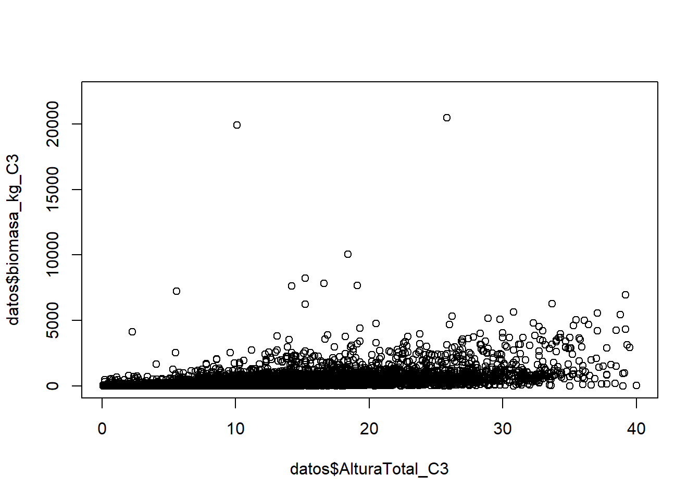
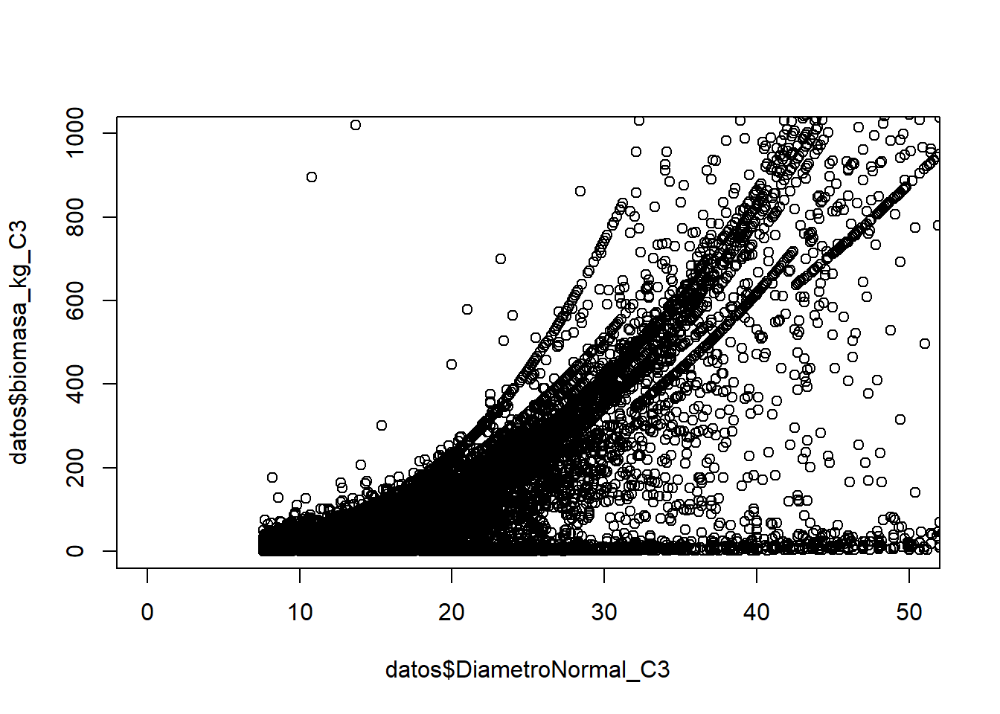
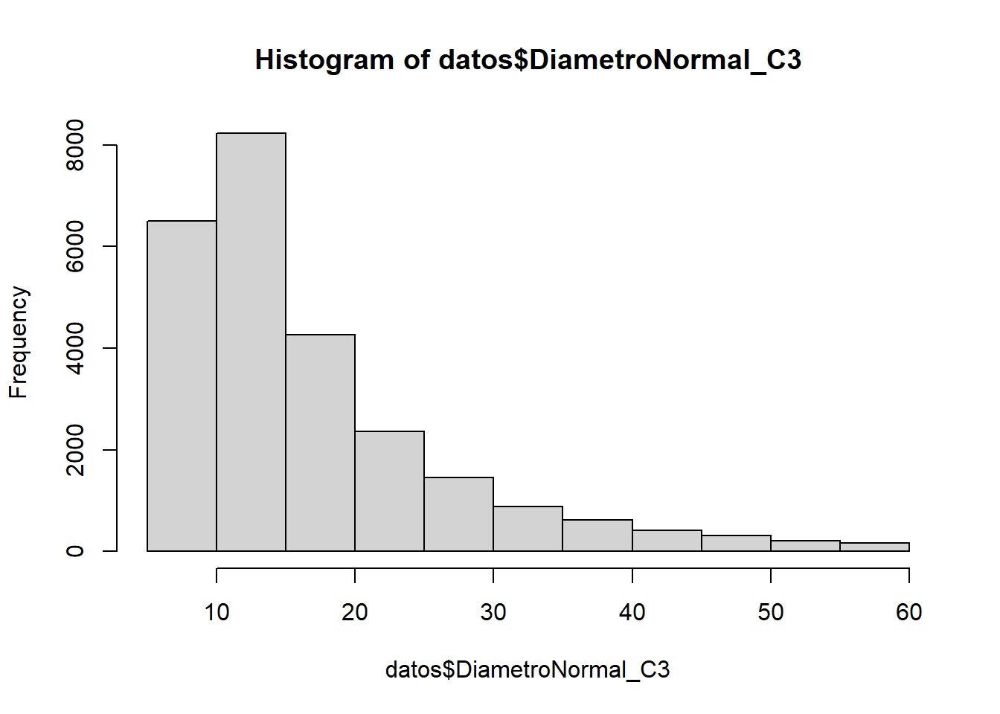
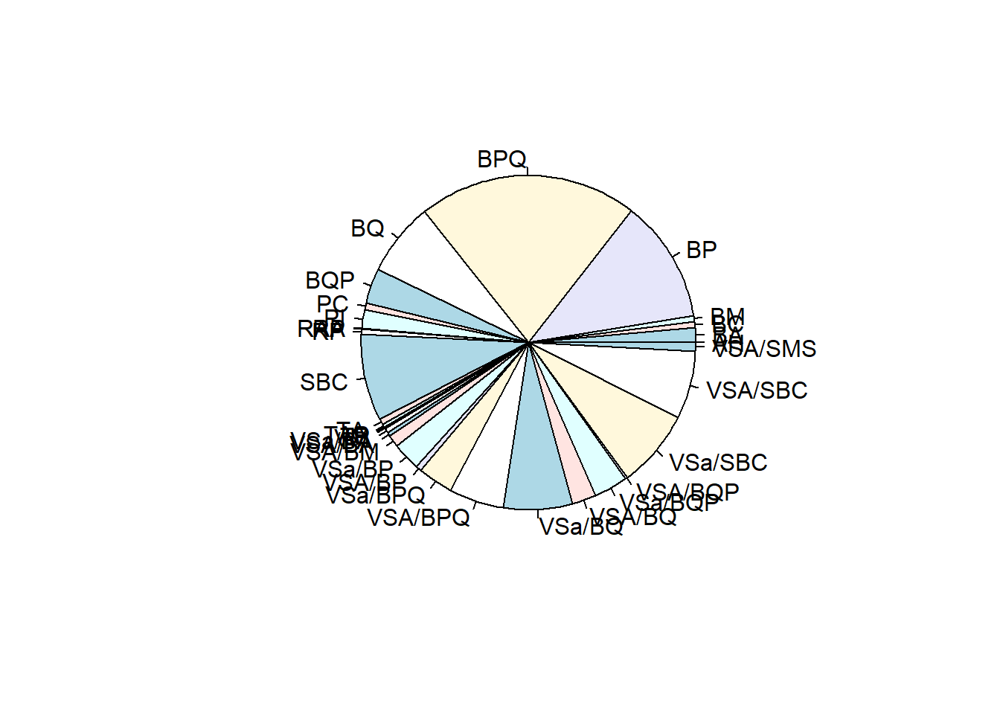

# install.packages("vegan")
library("vegan")2.ManejoDatos
Flujo de trabajo en proyectos de ciencia de datos
- Lectura de datos
- Revisión y análisis descriptivo.
- Preprocesamiento
- Análisis estadísticos o ajuste de modelos
- Exportación y presentación de resultados.
Paquetes
Un paso más allá: uso de paquetes
- Los paquetes son conjuntos de funciones que vienen en un paquete.
- Para usar las funciones contenidas en un paquete hay que descargarlas
- Y luego cargarlas en el espacio de trabajo
- ¿Cómo?:
- Instala el paquete en el disco local (TX mirror recomendado)
install.packages(“nombre del paquete”)
- Una vez instalado
library(“nombre del paquete”)
- Así queda cargado en el espacio de trabajo y ya podemos usar las funciones
- Instala el paquete en el disco local (TX mirror recomendado)
Recordar: cada vez que se abre R de nuevo, hay que cargar los paquetes deseados.
Instalar paquetes
Instalar vegan
Cargar vegan
??cca para sacar la ayuda y ver qué hace la función cca en el paquete vegan.
Paquetes personalizados
- Uno puede crear su propio paquete de funciones.
- Distribuirlo para otros usuarios.
- Sólo se requiere seguir una documentación para informar sobre lo que hace el paquete, cada función, el desarrollador, el tipo de licencia, etc.
- Estos paquetes se pueden subir en github.com.
- De este sitio también se pueden descargar otros paquetes desarrollados por usuarios.
Revisar documentación del paquete vegan vegan
Otros paquetes
- vegan: Community Ecology Package.
- terra.
- ggplot2: Create Elegant Data Visualisations Using the Grammar of Graphics.
- sf .
- tidyverse.
- landscapemetrics.
- iNext.
- tidymodels.
consultar: https://cran.r-project.org/web/packages/available_packages_by_name.html
Muchos paquetes traen algunos datos de ejemplo que pueden servir para saber cómo se tienen que meter los datos a ciertas funciones.
Por ejemplo:
data("dune")
data("dun.env")Warning in data("dun.env"): data set 'dun.env' not founddata("BCI")
data("BCI.env")Proyectos
Crear nuevo proyecto
Ventajas:
Definen la ruta de raíz como el directorio del proyecto.
LLevar mejor organización de datos y carpetas.
Permiten guardar entorno de trabajo para ese proyecto.
Permite mantener un historial separado por proyecto.
Sustituir \ con / en las rutas.
Mi sugerencia:
- Carpeta de 1) datos, 2) resultados y 3) scripts.
Lectura y escritura
Funciones base
Hasta ahora todo ha sido dentro de Rs
- Importar tablas de Excel
- Guardar la tabla como csv
- Importarlo mediante el comando read.csv(“Ruta del archivo.csv”)
- Las rutas deben de contener únicamente / y no \ (default de Windows).
- Meter la tabla a un objeto
- Exportar tablas de Excel
- Guardar la tabla en un objeto
- Exportar objeto mediante el comando write.csv(obj_resul,”Ruta del archivo.csv”)
Normalmente las variables se acomodan en las columnas, mientras que en los renglones cada observación.
Lectura
Revisar el directorio de trabajo utilizando
getwd()Escribir el nombre del archivo con todo y extensión
Descargar archivos en la siguiente liga: https://github.com/JonathanVSV/CursoR/tree/main/Data
Al entrar a la página dar clic en cada archivo y descargar (download raw file).
datos <- read.csv("Data/Individuos_InFys.csv",
header=T,
encoding = "utf-8",
stringsAsFactors= FALSE)
#Mostrar la parte superior de los datos
head(datos) Id_parcela DESCRIP_S7_C3
1 4165 VEGETACIÓN SECUNDARIA ARBUSTIVA DE MEZQUITAL XERÓFILO
2 4165 VEGETACIÓN SECUNDARIA ARBUSTIVA DE MEZQUITAL XERÓFILO
3 4165 VEGETACIÓN SECUNDARIA ARBUSTIVA DE MEZQUITAL XERÓFILO
4 4165 VEGETACIÓN SECUNDARIA ARBUSTIVA DE MEZQUITAL XERÓFILO
5 4165 VEGETACIÓN SECUNDARIA ARBUSTIVA DE MEZQUITAL XERÓFILO
6 4165 VEGETACIÓN SECUNDARIA ARBUSTIVA DE MEZQUITAL XERÓFILO
NombreComun_C3 Familia_APG_C3 Genero_APG_C3 Especie_APG_C3
1 Mezquite Fabaceae Prosopis juliflora
2 Mezquite Fabaceae Prosopis NULL
3 Mezquite Fabaceae Prosopis juliflora
4 Mezquite Fabaceae Prosopis juliflora
5 Mezquite Fabaceae Prosopis juliflora
6 Mezquite Fabaceae Prosopis juliflora
NombreCientifico_APG_C3 Forma_Biologica_Cat_C3 Condicion_C3
1 Prosopis juliflora Arbusto Arbol vivo
2 Prosopis Indeterminada Arbol muerto en pie
3 Prosopis juliflora Arbusto Arbol vivo
4 Prosopis juliflora Arbusto Arbol vivo
5 Prosopis juliflora Arbusto Arbol vivo
6 Prosopis juliflora Arbusto Arbol vivo
AlturaTotal_C3 AreaBasal_C3 biomasa_kg_C3
1 4.0 0.009161 16.249382
2 1.6 0.006221 2.464664
3 2.8 0.013273 25.276389
4 4.2 0.022698 47.901356
5 3.0 0.008495 14.851779
6 3.1 0.016286 32.252683#Mostrar su estructura
str(datos)'data.frame': 65 obs. of 12 variables:
$ Id_parcela : int 4165 4165 4165 4165 4165 4165 4165 4165 4165 4165 ...
$ DESCRIP_S7_C3 : chr "VEGETACIÓN SECUNDARIA ARBUSTIVA DE MEZQUITAL XERÓFILO" "VEGETACIÓN SECUNDARIA ARBUSTIVA DE MEZQUITAL XERÓFILO" "VEGETACIÓN SECUNDARIA ARBUSTIVA DE MEZQUITAL XERÓFILO" "VEGETACIÓN SECUNDARIA ARBUSTIVA DE MEZQUITAL XERÓFILO" ...
$ NombreComun_C3 : chr "Mezquite" "Mezquite" "Mezquite" "Mezquite" ...
$ Familia_APG_C3 : chr "Fabaceae" "Fabaceae" "Fabaceae" "Fabaceae" ...
$ Genero_APG_C3 : chr "Prosopis" "Prosopis" "Prosopis" "Prosopis" ...
$ Especie_APG_C3 : chr "juliflora" "NULL" "juliflora" "juliflora" ...
$ NombreCientifico_APG_C3: chr "Prosopis juliflora" "Prosopis" "Prosopis juliflora" "Prosopis juliflora" ...
$ Forma_Biologica_Cat_C3 : chr "Arbusto" "Indeterminada" "Arbusto" "Arbusto" ...
$ Condicion_C3 : chr "Arbol vivo" "Arbol muerto en pie" "Arbol vivo" "Arbol vivo" ...
$ AlturaTotal_C3 : num 4 1.6 2.8 4.2 3 3.1 4.1 3.6 4.3 3.4 ...
$ AreaBasal_C3 : num 0.00916 0.00622 0.01327 0.0227 0.0085 ...
$ biomasa_kg_C3 : num 16.25 2.46 25.28 47.9 14.85 ...Recomendación para leer archivos
- A veces R lee las columnas con caracteres como factores.
- Recuerden el problema de hacer conversión de factores a números.
- Recomendación: añadan stringsAsFactors = FALSE como último argumento de read.csv.
Escritura
Escribir el nombre del archivo con todo y extensión.
Escribir en csv
write.csv(datos,"Resul/Individuos_InFys_proc.csv",
row.names = F,
fileEncoding = "utf-8")Otra opción guardarlo en objeto de tipo rds.
saveRDS(datos,"Resul/Individuos_InFys_proc.rds")Leer RDS
readRDS("Resul/Individuos_InFys_proc.rds") Id_parcela DESCRIP_S7_C3
1 4165 VEGETACIÓN SECUNDARIA ARBUSTIVA DE MEZQUITAL XERÓFILO
2 4165 VEGETACIÓN SECUNDARIA ARBUSTIVA DE MEZQUITAL XERÓFILO
3 4165 VEGETACIÓN SECUNDARIA ARBUSTIVA DE MEZQUITAL XERÓFILO
4 4165 VEGETACIÓN SECUNDARIA ARBUSTIVA DE MEZQUITAL XERÓFILO
5 4165 VEGETACIÓN SECUNDARIA ARBUSTIVA DE MEZQUITAL XERÓFILO
6 4165 VEGETACIÓN SECUNDARIA ARBUSTIVA DE MEZQUITAL XERÓFILO
7 4165 VEGETACIÓN SECUNDARIA ARBUSTIVA DE MEZQUITAL XERÓFILO
8 4165 VEGETACIÓN SECUNDARIA ARBUSTIVA DE MEZQUITAL XERÓFILO
9 4165 VEGETACIÓN SECUNDARIA ARBUSTIVA DE MEZQUITAL XERÓFILO
10 4165 VEGETACIÓN SECUNDARIA ARBUSTIVA DE MEZQUITAL XERÓFILO
11 4165 VEGETACIÓN SECUNDARIA ARBUSTIVA DE MEZQUITAL XERÓFILO
12 4165 VEGETACIÓN SECUNDARIA ARBUSTIVA DE MEZQUITAL XERÓFILO
13 4165 VEGETACIÓN SECUNDARIA ARBUSTIVA DE MEZQUITAL XERÓFILO
14 4165 VEGETACIÓN SECUNDARIA ARBUSTIVA DE MEZQUITAL XERÓFILO
15 4165 VEGETACIÓN SECUNDARIA ARBUSTIVA DE MEZQUITAL XERÓFILO
16 4165 VEGETACIÓN SECUNDARIA ARBUSTIVA DE MEZQUITAL XERÓFILO
17 4165 VEGETACIÓN SECUNDARIA ARBUSTIVA DE MEZQUITAL XERÓFILO
18 4165 VEGETACIÓN SECUNDARIA ARBUSTIVA DE MEZQUITAL XERÓFILO
19 4165 VEGETACIÓN SECUNDARIA ARBUSTIVA DE MEZQUITAL XERÓFILO
20 4165 VEGETACIÓN SECUNDARIA ARBUSTIVA DE MEZQUITAL XERÓFILO
21 4165 VEGETACIÓN SECUNDARIA ARBUSTIVA DE MEZQUITAL XERÓFILO
22 4165 VEGETACIÓN SECUNDARIA ARBUSTIVA DE MEZQUITAL XERÓFILO
23 4165 VEGETACIÓN SECUNDARIA ARBUSTIVA DE MEZQUITAL XERÓFILO
24 4165 VEGETACIÓN SECUNDARIA ARBUSTIVA DE MEZQUITAL XERÓFILO
25 4165 VEGETACIÓN SECUNDARIA ARBUSTIVA DE MEZQUITAL XERÓFILO
26 4165 VEGETACIÓN SECUNDARIA ARBUSTIVA DE MEZQUITAL XERÓFILO
27 4165 VEGETACIÓN SECUNDARIA ARBUSTIVA DE MEZQUITAL XERÓFILO
28 4165 VEGETACIÓN SECUNDARIA ARBUSTIVA DE MEZQUITAL XERÓFILO
29 4165 VEGETACIÓN SECUNDARIA ARBUSTIVA DE MEZQUITAL XERÓFILO
30 4165 VEGETACIÓN SECUNDARIA ARBUSTIVA DE MEZQUITAL XERÓFILO
31 4165 VEGETACIÓN SECUNDARIA ARBUSTIVA DE MEZQUITAL XERÓFILO
32 4165 VEGETACIÓN SECUNDARIA ARBUSTIVA DE MEZQUITAL XERÓFILO
33 4165 VEGETACIÓN SECUNDARIA ARBUSTIVA DE MEZQUITAL XERÓFILO
34 4165 VEGETACIÓN SECUNDARIA ARBUSTIVA DE MEZQUITAL XERÓFILO
35 4165 VEGETACIÓN SECUNDARIA ARBUSTIVA DE MEZQUITAL XERÓFILO
36 4165 VEGETACIÓN SECUNDARIA ARBUSTIVA DE MEZQUITAL XERÓFILO
37 4165 VEGETACIÓN SECUNDARIA ARBUSTIVA DE MEZQUITAL XERÓFILO
38 4165 VEGETACIÓN SECUNDARIA ARBUSTIVA DE MEZQUITAL XERÓFILO
39 4165 VEGETACIÓN SECUNDARIA ARBUSTIVA DE MEZQUITAL XERÓFILO
40 4165 VEGETACIÓN SECUNDARIA ARBUSTIVA DE MEZQUITAL XERÓFILO
41 4165 VEGETACIÓN SECUNDARIA ARBUSTIVA DE MEZQUITAL XERÓFILO
42 4165 VEGETACIÓN SECUNDARIA ARBUSTIVA DE MEZQUITAL XERÓFILO
43 4165 VEGETACIÓN SECUNDARIA ARBUSTIVA DE MEZQUITAL XERÓFILO
44 4165 VEGETACIÓN SECUNDARIA ARBUSTIVA DE MEZQUITAL XERÓFILO
45 4165 VEGETACIÓN SECUNDARIA ARBUSTIVA DE MEZQUITAL XERÓFILO
46 4165 VEGETACIÓN SECUNDARIA ARBUSTIVA DE MEZQUITAL XERÓFILO
47 4165 VEGETACIÓN SECUNDARIA ARBUSTIVA DE MEZQUITAL XERÓFILO
48 4165 VEGETACIÓN SECUNDARIA ARBUSTIVA DE MEZQUITAL XERÓFILO
49 4165 VEGETACIÓN SECUNDARIA ARBUSTIVA DE MEZQUITAL XERÓFILO
50 4165 VEGETACIÓN SECUNDARIA ARBUSTIVA DE MEZQUITAL XERÓFILO
51 4165 VEGETACIÓN SECUNDARIA ARBUSTIVA DE MEZQUITAL XERÓFILO
52 4165 VEGETACIÓN SECUNDARIA ARBUSTIVA DE MEZQUITAL XERÓFILO
53 4165 VEGETACIÓN SECUNDARIA ARBUSTIVA DE MEZQUITAL XERÓFILO
54 4165 VEGETACIÓN SECUNDARIA ARBUSTIVA DE MEZQUITAL XERÓFILO
55 4165 VEGETACIÓN SECUNDARIA ARBUSTIVA DE MEZQUITAL XERÓFILO
56 4165 VEGETACIÓN SECUNDARIA ARBUSTIVA DE MEZQUITAL XERÓFILO
57 4165 VEGETACIÓN SECUNDARIA ARBUSTIVA DE MEZQUITAL XERÓFILO
58 4830 VEGETACIÓN SECUNDARIA ARBUSTIVA DE MEZQUITAL XERÓFILO
59 4830 VEGETACIÓN SECUNDARIA ARBUSTIVA DE MEZQUITAL XERÓFILO
60 4830 VEGETACIÓN SECUNDARIA ARBUSTIVA DE MEZQUITAL XERÓFILO
61 4830 VEGETACIÓN SECUNDARIA ARBUSTIVA DE MEZQUITAL XERÓFILO
62 4830 VEGETACIÓN SECUNDARIA ARBUSTIVA DE MEZQUITAL XERÓFILO
63 4830 VEGETACIÓN SECUNDARIA ARBUSTIVA DE MEZQUITAL XERÓFILO
64 4830 VEGETACIÓN SECUNDARIA ARBUSTIVA DE MEZQUITAL XERÓFILO
65 4830 VEGETACIÓN SECUNDARIA ARBUSTIVA DE MEZQUITAL XERÓFILO
NombreComun_C3 Familia_APG_C3 Genero_APG_C3 Especie_APG_C3
1 Mezquite Fabaceae Prosopis juliflora
2 Mezquite Fabaceae Prosopis NULL
3 Mezquite Fabaceae Prosopis juliflora
4 Mezquite Fabaceae Prosopis juliflora
5 Mezquite Fabaceae Prosopis juliflora
6 Mezquite Fabaceae Prosopis juliflora
7 Mezquite Fabaceae Prosopis juliflora
8 Mezquite Fabaceae Prosopis juliflora
9 Mezquite Fabaceae Prosopis juliflora
10 Mezquite Fabaceae Prosopis juliflora
11 Mezquite Fabaceae Prosopis juliflora
12 Mezquite Fabaceae Prosopis juliflora
13 Mezquite Fabaceae Prosopis juliflora
14 Mezquite Fabaceae Prosopis juliflora
15 Mezquite Fabaceae Prosopis juliflora
16 Mezquite Fabaceae Prosopis juliflora
17 Mezquite Fabaceae Prosopis juliflora
18 Mezquite Fabaceae Prosopis juliflora
19 Mezquite Fabaceae Prosopis juliflora
20 Mezquite Fabaceae Prosopis juliflora
21 Mezquite Fabaceae Prosopis juliflora
22 Mezquite Fabaceae Prosopis juliflora
23 Mezquite Fabaceae Prosopis juliflora
24 Mezquite Fabaceae Prosopis juliflora
25 Palo fierro Fabaceae Olneya tesota
26 Mezquite Fabaceae Prosopis juliflora
27 Mezquite Fabaceae Prosopis NULL
28 Mezquite Fabaceae Prosopis juliflora
29 Mezquite Fabaceae Prosopis juliflora
30 Mezquite Fabaceae Prosopis juliflora
31 Mezquite Fabaceae Prosopis NULL
32 Mezquite Fabaceae Prosopis juliflora
33 Palo fierro Fabaceae Olneya tesota
34 Mezquite Fabaceae Prosopis juliflora
35 Mezquite Fabaceae Prosopis juliflora
36 Mezquite Fabaceae Prosopis juliflora
37 Mezquite Fabaceae Prosopis juliflora
38 Mezquite Fabaceae Prosopis juliflora
39 Mezquite Fabaceae Prosopis juliflora
40 Mezquite Fabaceae Prosopis juliflora
41 Mezquite Fabaceae Prosopis juliflora
42 Mezquite Fabaceae Prosopis juliflora
43 Mezquite Fabaceae Prosopis juliflora
44 Mequite Fabaceae Prosopis NULL
45 Mezquite Fabaceae Prosopis juliflora
46 Mezquite Fabaceae Prosopis juliflora
47 Mezquite Fabaceae Prosopis juliflora
48 Mezquite Fabaceae Prosopis juliflora
49 Mezquite Fabaceae Prosopis juliflora
50 Mezquite Fabaceae Prosopis juliflora
51 Mezquite Fabaceae Prosopis juliflora
52 Mezquite Fabaceae Prosopis juliflora
53 Mezquite Fabaceae Prosopis juliflora
54 Mezquite Fabaceae Prosopis juliflora
55 Mezquite Fabaceae Prosopis juliflora
56 Mezquite Fabaceae Prosopis juliflora
57 Mezquite Fabaceae Prosopis juliflora
58 Mezquite Fabaceae Prosopis juliflora
59 Mezquite Fabaceae Prosopis juliflora
60 Mezquite Fabaceae Prosopis juliflora
61 Mezquite Fabaceae Prosopis juliflora
62 Mezquite Fabaceae Prosopis juliflora
63 Mezquite Fabaceae Prosopis juliflora
64 Palo verde Fabaceae Cercidium microphyllum
65 Mezquite Fabaceae Prosopis juliflora
NombreCientifico_APG_C3 Forma_Biologica_Cat_C3 Condicion_C3
1 Prosopis juliflora Arbusto Arbol vivo
2 Prosopis Indeterminada Arbol muerto en pie
3 Prosopis juliflora Arbusto Arbol vivo
4 Prosopis juliflora Arbusto Arbol vivo
5 Prosopis juliflora Arbusto Arbol vivo
6 Prosopis juliflora Arbusto Arbol vivo
7 Prosopis juliflora Arbusto Arbol vivo
8 Prosopis juliflora Arbusto Arbol vivo
9 Prosopis juliflora Arbusto Arbol vivo
10 Prosopis juliflora Arbusto Arbol vivo
11 Prosopis juliflora Arbusto Arbol vivo
12 Prosopis juliflora Arbusto Arbol vivo
13 Prosopis juliflora Arbusto Arbol muerto en pie
14 Prosopis juliflora Arbusto Arbol vivo
15 Prosopis juliflora Arbusto Arbol vivo
16 Prosopis juliflora Arbusto Arbol vivo
17 Prosopis juliflora Arbusto Arbol vivo
18 Prosopis juliflora Arbusto Arbol vivo
19 Prosopis juliflora Arbusto Arbol vivo
20 Prosopis juliflora Arbusto Arbol vivo
21 Prosopis juliflora Arbusto Arbol vivo
22 Prosopis juliflora Arbusto Arbol vivo
23 Prosopis juliflora Arbusto Arbol vivo
24 Prosopis juliflora Arbusto Arbol vivo
25 Olneya tesota Arbol Arbol muerto en pie
26 Prosopis juliflora Arbusto Arbol vivo
27 Prosopis Indeterminada Arbol muerto en pie
28 Prosopis juliflora Arbusto Arbol vivo
29 Prosopis juliflora Arbusto Arbol vivo
30 Prosopis juliflora Arbusto Arbol vivo
31 Prosopis Indeterminada Arbol muerto en pie
32 Prosopis juliflora Arbusto Arbol vivo
33 Olneya tesota Arbol Arbol vivo
34 Prosopis juliflora Arbusto Arbol vivo
35 Prosopis juliflora Arbusto Arbol vivo
36 Prosopis juliflora Arbusto Arbol vivo
37 Prosopis juliflora Arbusto Arbol vivo
38 Prosopis juliflora Arbusto Arbol vivo
39 Prosopis juliflora Arbusto Arbol vivo
40 Prosopis juliflora Arbusto Arbol vivo
41 Prosopis juliflora Arbusto Arbol vivo
42 Prosopis juliflora Arbusto Arbol vivo
43 Prosopis juliflora Arbusto Arbol vivo
44 Prosopis Indeterminada Arbol muerto en pie
45 Prosopis juliflora Arbusto Arbol muerto en pie
46 Prosopis juliflora Arbusto Arbol vivo
47 Prosopis juliflora Arbusto Arbol vivo
48 Prosopis juliflora Arbusto Arbol vivo
49 Prosopis juliflora Arbusto Arbol vivo
50 Prosopis juliflora Arbusto Arbol vivo
51 Prosopis juliflora Arbusto Arbol vivo
52 Prosopis juliflora Arbusto Arbol vivo
53 Prosopis juliflora Arbusto Arbol vivo
54 Prosopis juliflora Arbusto Arbol vivo
55 Prosopis juliflora Arbusto Arbol vivo
56 Prosopis juliflora Arbusto Arbol vivo
57 Prosopis juliflora Arbusto Arbol vivo
58 Prosopis juliflora Arbusto Arbol vivo
59 Prosopis juliflora Arbusto Arbol vivo
60 Prosopis juliflora Arbusto Arbol vivo
61 Prosopis juliflora Arbusto Arbol vivo
62 Prosopis juliflora Arbusto Arbol vivo
63 Prosopis juliflora Arbusto Arbol vivo
64 Cercidium microphyllum Arbol Arbol vivo
65 Prosopis juliflora Arbusto Arbol vivo
AlturaTotal_C3 AreaBasal_C3 biomasa_kg_C3
1 4.00 9.16100e-03 16.249382
2 1.60 6.22100e-03 2.464664
3 2.80 1.32730e-02 25.276389
4 4.20 2.26980e-02 47.901356
5 3.00 8.49500e-03 14.851779
6 3.10 1.62860e-02 32.252683
7 4.10 1.49570e-02 29.142036
8 3.60 6.08200e-03 9.974479
9 4.30 9.16100e-03 16.249382
10 3.40 1.13100e-02 20.887042
11 2.80 8.33200e-03 14.513733
12 4.60 5.10710e-02 125.884795
13 1.60 8.65900e-03 3.575039
14 5.50 1.53940e-02 30.158597
15 3.30 8.49500e-03 14.851779
16 4.10 1.13100e-02 20.887042
17 3.50 5.80900e-03 9.442736
18 4.00 1.30700e-02 24.815516
19 5.60 2.11240e-02 43.970451
20 3.40 1.13100e-02 20.887042
21 4.50 8.65900e-03 15.194350
22 4.00 1.76720e-02 35.547863
23 4.60 8.65900e-03 15.194350
24 3.40 4.77800e-03 7.482547
25 1.50 1.07510e-02 4.412067
26 4.60 2.83530e-02 62.439276
27 1.80 5.67500e-03 2.529112
28 3.10 3.63050e-02 83.827956
29 3.10 5.02700e-03 7.947883
30 3.90 1.03870e-02 18.872567
31 1.00 1.96070e-02 4.854806
32 3.80 1.58370e-02 31.195443
33 4.00 1.53940e-02 41.957409
34 2.30 1.32730e-02 25.276389
35 3.90 9.50300e-03 16.975665
36 3.40 6.08200e-03 9.974479
37 2.90 6.36200e-03 10.523202
38 3.80 6.64800e-03 11.089052
39 3.70 5.41100e-03 8.676631
40 3.50 2.13830e-02 44.612059
41 4.30 8.65900e-03 15.194350
42 3.80 5.80900e-03 9.442736
43 4.60 1.72030e-02 34.428785
44 9.00 5.54200e-03 12.349767
45 3.40 8.65900e-03 7.596957
46 4.40 1.28680e-02 24.359557
47 4.30 1.03870e-02 18.872567
48 3.70 1.28680e-02 24.359557
49 2.00 5.67500e-03 9.183185
50 3.30 5.02700e-03 7.947883
51 4.00 2.24320e-02 47.232621
52 3.50 9.85200e-03 17.720443
53 4.30 1.81460e-02 36.687769
54 3.90 7.85400e-03 13.526581
55 3.70 5.02700e-03 7.947883
56 3.80 5.94500e-03 9.706494
57 3.70 9.50300e-03 16.975665
58 5.00 4.90200e-03 7.713179
59 2.18 9.99991e+05 24.417714
60 3.67 5.15300e-03 8.186680
61 4.68 8.17100e-03 14.180196
62 4.23 5.02700e-03 7.947883
63 3.38 5.94500e-03 9.706494
64 3.72 5.80900e-03 11.743203
65 2.84 5.15300e-03 8.186680Problemas comunes: encoding
Problemas comunes con la importación y exportación de datos: encoding. R suele usar utf-8, a veces excel tiene otra codificación A veces al abrir los datos en excel y guardarlos, se cambia el encoding de los archivos o el formato de la información (p.ej., fechas).
Recomendación: Revisar el encoding nativo de su R con Sys.getlocale() y si existe la opción de guardar desde excel con codificación utf-8, usarla.
Ver los acentos
datos <- read.csv("Data/Individuos_InFys_latin1.csv",
header=T,
encoding = "utf-8")
#Mostrar la parte superior de los datos
head(datos) Id_parcela DESCRIP_S7_C3
1 4165 VEGETACI\xd3N SECUNDARIA ARBUSTIVA DE MEZQUITAL XER\xd3FILO
2 4165 VEGETACI\xd3N SECUNDARIA ARBUSTIVA DE MEZQUITAL XER\xd3FILO
3 4165 VEGETACI\xd3N SECUNDARIA ARBUSTIVA DE MEZQUITAL XER\xd3FILO
4 4165 VEGETACI\xd3N SECUNDARIA ARBUSTIVA DE MEZQUITAL XER\xd3FILO
5 4165 VEGETACI\xd3N SECUNDARIA ARBUSTIVA DE MEZQUITAL XER\xd3FILO
6 4165 VEGETACI\xd3N SECUNDARIA ARBUSTIVA DE MEZQUITAL XER\xd3FILO
NombreComun_C3 Familia_APG_C3 Genero_APG_C3 Especie_APG_C3
1 Mezquite Fabaceae Prosopis juliflora
2 Mezquite Fabaceae Prosopis NULL
3 Mezquite Fabaceae Prosopis juliflora
4 Mezquite Fabaceae Prosopis juliflora
5 Mezquite Fabaceae Prosopis juliflora
6 Mezquite Fabaceae Prosopis juliflora
NombreCientifico_APG_C3 Forma_Biologica_Cat_C3 Condicion_C3
1 Prosopis juliflora Arbusto Arbol vivo
2 Prosopis Indeterminada Arbol muerto en pie
3 Prosopis juliflora Arbusto Arbol vivo
4 Prosopis juliflora Arbusto Arbol vivo
5 Prosopis juliflora Arbusto Arbol vivo
6 Prosopis juliflora Arbusto Arbol vivo
AlturaTotal_C3 AreaBasal_C3 biomasa_kg_C3
1 4.0 0.009161 16.249382
2 1.6 0.006221 2.464664
3 2.8 0.013273 25.276389
4 4.2 0.022698 47.901356
5 3.0 0.008495 14.851779
6 3.1 0.016286 32.252683#Mostrar su estructura
str(datos)'data.frame': 65 obs. of 12 variables:
$ Id_parcela : int 4165 4165 4165 4165 4165 4165 4165 4165 4165 4165 ...
$ DESCRIP_S7_C3 : chr "VEGETACI\xd3N SECUNDARIA ARBUSTIVA DE MEZQUITAL XER\xd3FILO" "VEGETACI\xd3N SECUNDARIA ARBUSTIVA DE MEZQUITAL XER\xd3FILO" "VEGETACI\xd3N SECUNDARIA ARBUSTIVA DE MEZQUITAL XER\xd3FILO" "VEGETACI\xd3N SECUNDARIA ARBUSTIVA DE MEZQUITAL XER\xd3FILO" ...
$ NombreComun_C3 : chr "Mezquite" "Mezquite" "Mezquite" "Mezquite" ...
$ Familia_APG_C3 : chr "Fabaceae" "Fabaceae" "Fabaceae" "Fabaceae" ...
$ Genero_APG_C3 : chr "Prosopis" "Prosopis" "Prosopis" "Prosopis" ...
$ Especie_APG_C3 : chr "juliflora" "NULL" "juliflora" "juliflora" ...
$ NombreCientifico_APG_C3: chr "Prosopis juliflora" "Prosopis" "Prosopis juliflora" "Prosopis juliflora" ...
$ Forma_Biologica_Cat_C3 : chr "Arbusto" "Indeterminada" "Arbusto" "Arbusto" ...
$ Condicion_C3 : chr "Arbol vivo" "Arbol muerto en pie" "Arbol vivo" "Arbol vivo" ...
$ AlturaTotal_C3 : num 4 1.6 2.8 4.2 3 3.1 4.1 3.6 4.3 3.4 ...
$ AreaBasal_C3 : num 0.00916 0.00622 0.01327 0.0227 0.0085 ...
$ biomasa_kg_C3 : num 16.25 2.46 25.28 47.9 14.85 ...datos <- read.csv("Data/Individuos_InFys_latin1.csv",
header=T,
encoding = "latin1")Paquete readr
Paquete para importar y exportar datos más fácilmente
library(readr)
datos <- read_csv("Data/Individuos_InFys.csv",
na = "")Rows: 65 Columns: 12
── Column specification ────────────────────────────────────────────────────────
Delimiter: ","
chr (8): DESCRIP_S7_C3, NombreComun_C3, Familia_APG_C3, Genero_APG_C3, Espec...
dbl (4): Id_parcela, AlturaTotal_C3, AreaBasal_C3, biomasa_kg_C3
ℹ Use `spec()` to retrieve the full column specification for this data.
ℹ Specify the column types or set `show_col_types = FALSE` to quiet this message.#Mostrar la parte superior de los datos
head(datos)# A tibble: 6 × 12
Id_parcela DESCRIP_S7_C3 NombreComun_C3 Familia_APG_C3 Genero_APG_C3
<dbl> <chr> <chr> <chr> <chr>
1 4165 VEGETACIÓN SECUNDARIA … Mezquite Fabaceae Prosopis
2 4165 VEGETACIÓN SECUNDARIA … Mezquite Fabaceae Prosopis
3 4165 VEGETACIÓN SECUNDARIA … Mezquite Fabaceae Prosopis
4 4165 VEGETACIÓN SECUNDARIA … Mezquite Fabaceae Prosopis
5 4165 VEGETACIÓN SECUNDARIA … Mezquite Fabaceae Prosopis
6 4165 VEGETACIÓN SECUNDARIA … Mezquite Fabaceae Prosopis
# ℹ 7 more variables: Especie_APG_C3 <chr>, NombreCientifico_APG_C3 <chr>,
# Forma_Biologica_Cat_C3 <chr>, Condicion_C3 <chr>, AlturaTotal_C3 <dbl>,
# AreaBasal_C3 <dbl>, biomasa_kg_C3 <dbl>#Mostrar su estructura
str(datos)spc_tbl_ [65 × 12] (S3: spec_tbl_df/tbl_df/tbl/data.frame)
$ Id_parcela : num [1:65] 4165 4165 4165 4165 4165 ...
$ DESCRIP_S7_C3 : chr [1:65] "VEGETACIÓN SECUNDARIA ARBUSTIVA DE MEZQUITAL XERÓFILO" "VEGETACIÓN SECUNDARIA ARBUSTIVA DE MEZQUITAL XERÓFILO" "VEGETACIÓN SECUNDARIA ARBUSTIVA DE MEZQUITAL XERÓFILO" "VEGETACIÓN SECUNDARIA ARBUSTIVA DE MEZQUITAL XERÓFILO" ...
$ NombreComun_C3 : chr [1:65] "Mezquite" "Mezquite" "Mezquite" "Mezquite" ...
$ Familia_APG_C3 : chr [1:65] "Fabaceae" "Fabaceae" "Fabaceae" "Fabaceae" ...
$ Genero_APG_C3 : chr [1:65] "Prosopis" "Prosopis" "Prosopis" "Prosopis" ...
$ Especie_APG_C3 : chr [1:65] "juliflora" "NULL" "juliflora" "juliflora" ...
$ NombreCientifico_APG_C3: chr [1:65] "Prosopis juliflora" "Prosopis" "Prosopis juliflora" "Prosopis juliflora" ...
$ Forma_Biologica_Cat_C3 : chr [1:65] "Arbusto" "Indeterminada" "Arbusto" "Arbusto" ...
$ Condicion_C3 : chr [1:65] "Arbol vivo" "Arbol muerto en pie" "Arbol vivo" "Arbol vivo" ...
$ AlturaTotal_C3 : num [1:65] 4 1.6 2.8 4.2 3 3.1 4.1 3.6 4.3 3.4 ...
$ AreaBasal_C3 : num [1:65] 0.00916 0.00622 0.01327 0.0227 0.0085 ...
$ biomasa_kg_C3 : num [1:65] 16.25 2.46 25.28 47.9 14.85 ...
- attr(*, "spec")=
.. cols(
.. Id_parcela = col_double(),
.. DESCRIP_S7_C3 = col_character(),
.. NombreComun_C3 = col_character(),
.. Familia_APG_C3 = col_character(),
.. Genero_APG_C3 = col_character(),
.. Especie_APG_C3 = col_character(),
.. NombreCientifico_APG_C3 = col_character(),
.. Forma_Biologica_Cat_C3 = col_character(),
.. Condicion_C3 = col_character(),
.. AlturaTotal_C3 = col_double(),
.. AreaBasal_C3 = col_double(),
.. biomasa_kg_C3 = col_double()
.. )
- attr(*, "problems")=<externalptr> Paquete readxl
Para importar datos directamente desde un archivo de excel
De los datos que descargaron
library(readxl)
datos <- read_excel("Data/INFyS_2015_2020_Michoacan_de_Ocampo_lHwLKIM.xlsx",
sheet = "Arbolado")Warning: Expecting numeric in BW19313 / R19313C75: got 'NULL'Warning: Expecting numeric in BX19313 / R19313C76: got 'NULL'#Mostrar la parte superior de los datos
head(datos)# A tibble: 6 × 76
UPMID IdConglomerado ArboladoID_C3 Anio_C3 Cve_Estado_C3 Estado_C3 CVEECON1_C3
<dbl> <dbl> <dbl> <dbl> <dbl> <chr> <dbl>
1 40277 67761 801985 2019 16 Michoacá… 14
2 40277 67761 802033 2019 16 Michoacá… 14
3 40277 67761 802948 2019 16 Michoacá… 14
4 40279 67762 135014 2015 16 Michoacá… 14
5 40279 67762 135029 2015 16 Michoacá… 14
6 40279 67762 135035 2015 16 Michoacá… 14
# ℹ 69 more variables: CVEECON2_C3 <dbl>, CVEECON3_C3 <chr>, CVEECON4_C3 <chr>,
# DESECON1_C3 <chr>, DESECON2_C3 <chr>, DESECON3_C3 <chr>, DESECON4_C3 <chr>,
# Region_Hidrologica_C3 <chr>, CVE_S7_C3 <chr>, X_C3 <dbl>, Y_C3 <dbl>,
# DESCRIP_S7_C3 <chr>, FORM_S7_C3 <chr>, FAO_S7_C3 <lgl>, ECO_S7_C3 <chr>,
# Sitio_C3 <dbl>, Consecutivo_C3 <dbl>, NoIndividuo_C3 <dbl>,
# NoRama_C3 <dbl>, Azimut_C3 <dbl>, Distancia_C3 <dbl>, NombreComun_C3 <chr>,
# Familia_APG_C3 <chr>, Genero_APG_C3 <chr>, Especie_APG_C3 <chr>, …#Mostrar su estructura
str(datos)tibble [26,035 × 76] (S3: tbl_df/tbl/data.frame)
$ UPMID : num [1:26035] 40277 40277 40277 40279 40279 ...
$ IdConglomerado : num [1:26035] 67761 67761 67761 67762 67762 ...
$ ArboladoID_C3 : num [1:26035] 801985 802033 802948 135014 135029 ...
$ Anio_C3 : num [1:26035] 2019 2019 2019 2015 2015 ...
$ Cve_Estado_C3 : num [1:26035] 16 16 16 16 16 16 16 16 16 16 ...
$ Estado_C3 : chr [1:26035] "Michoacán de Ocampo" "Michoacán de Ocampo" "Michoacán de Ocampo" "Michoacán de Ocampo" ...
$ CVEECON1_C3 : num [1:26035] 14 14 14 14 14 14 14 14 14 14 ...
$ CVEECON2_C3 : num [1:26035] 14.5 14.5 14.5 14.5 14.5 14.5 14.5 14.5 14.5 14.5 ...
$ CVEECON3_C3 : chr [1:26035] "14.5.2" "14.5.2" "14.5.2" "14.5.2" ...
$ CVEECON4_C3 : chr [1:26035] "14.5.2.3" "14.5.2.3" "14.5.2.3" "14.5.2.3" ...
$ DESECON1_C3 : chr [1:26035] "Selvas Calido-Secas" "Selvas Calido-Secas" "Selvas Calido-Secas" "Selvas Calido-Secas" ...
$ DESECON2_C3 : chr [1:26035] "Planicie Costera y Lomerios del Pacifico Sur" "Planicie Costera y Lomerios del Pacifico Sur" "Planicie Costera y Lomerios del Pacifico Sur" "Planicie Costera y Lomerios del Pacifico Sur" ...
$ DESECON3_C3 : chr [1:26035] "Lomerios y Piedemontes del Pacifico Sur Mexicano con Selva Espinosa" "Lomerios y Piedemontes del Pacifico Sur Mexicano con Selva Espinosa" "Lomerios y Piedemontes del Pacifico Sur Mexicano con Selva Espinosa" "Lomerios y Piedemontes del Pacifico Sur Mexicano con Selva Espinosa" ...
$ DESECON4_C3 : chr [1:26035] "Planicie Costera y lomerios del Pacifico Sur con selva baja caducifolia" "Planicie Costera y lomerios del Pacifico Sur con selva baja caducifolia" "Planicie Costera y lomerios del Pacifico Sur con selva baja caducifolia" "Planicie Costera y lomerios del Pacifico Sur con selva baja caducifolia" ...
$ Region_Hidrologica_C3 : chr [1:26035] "Costa de Michoacan" "Costa de Michoacan" "Costa de Michoacan" "Costa de Michoacan" ...
$ CVE_S7_C3 : chr [1:26035] "BPQ" "BPQ" "BPQ" "VSA/BPQ" ...
$ X_C3 : num [1:26035] -103 -103 -103 -102 -102 ...
$ Y_C3 : num [1:26035] 18.2 18.2 18.2 18.2 18.2 ...
$ DESCRIP_S7_C3 : chr [1:26035] "BOSQUE DE PINO-ENCINO" "BOSQUE DE PINO-ENCINO" "BOSQUE DE PINO-ENCINO" "VEGETACIÓN SECUNDARIA ARBÓREA DE BOSQUE DE PINO-ENCINO" ...
$ FORM_S7_C3 : chr [1:26035] "Coníferas y latifoliadas" "Coníferas y latifoliadas" "Coníferas y latifoliadas" "Coníferas y latifoliadas" ...
$ FAO_S7_C3 : logi [1:26035] NA NA NA NA NA NA ...
$ ECO_S7_C3 : chr [1:26035] "Bosques" "Bosques" "Bosques" "Bosques" ...
$ Sitio_C3 : num [1:26035] 1 3 4 1 1 1 1 2 2 3 ...
$ Consecutivo_C3 : num [1:26035] 9 19 13 1 14 20 22 12 8 2 ...
$ NoIndividuo_C3 : num [1:26035] 9 10 8 1 14 20 22 12 8 2 ...
$ NoRama_C3 : num [1:26035] 9 19 13 1 16 22 24 12 8 2 ...
$ Azimut_C3 : num [1:26035] 44 276 202 16 178 239 281 223 116 135 ...
$ Distancia_C3 : num [1:26035] 9.5 8.5 1 9.5 4.4 5.7 8.2 8.5 11.2 3.8 ...
$ NombreComun_C3 : chr [1:26035] "temezquite" "tocon" "ambula" "encino" ...
$ Familia_APG_C3 : chr [1:26035] "Fabaceae" "ZZ Familia Desconocida" "Hernandiaceae" "Pinaceae" ...
$ Genero_APG_C3 : chr [1:26035] "Lysiloma" "ZZ Genero Desconocido" "Gyrocarpus" "Pinus" ...
$ Especie_APG_C3 : chr [1:26035] "divaricatum" "NULL" "jatrophifolius" "oocarpa" ...
$ Categoria_APG_C3 : chr [1:26035] "NULL" "NULL" "NULL" "NULL" ...
$ Infraespecie_APG_C3 : chr [1:26035] "NULL" "NULL" "NULL" "NULL" ...
$ NombreCientifico_APG_C3 : chr [1:26035] "Lysiloma divaricatum" "ZZ Genero Desconocido" "Gyrocarpus jatrophifolius" "Pinus oocarpa" ...
$ Forma_Biologica_Cat_C3 : chr [1:26035] "Arbol" "Indeterminada" "Arbol" "Arbol" ...
$ FormaFuste_C3 : chr [1:26035] "Individuo curvo con dos o más fustes" "No capturado" "Individuo curvo con dos o más fustes" "individuo recto con un fuste" ...
$ Condicion_C3 : chr [1:26035] "Arbol vivo" "Tocon sin marca" "Arbol vivo" "Arbol vivo" ...
$ MuertoPie_C3 : chr [1:26035] "No capturado" "No capturado" "No capturado" "No capturado" ...
$ GradoPutrefaccion_C3 : chr [1:26035] "No capturado" "No capturado" "No capturado" "No capturado" ...
$ TipoTocon_C3 : chr [1:26035] "No capturado" "Tocón madera seca (madera dura sin evidencias de descomposición)" "No capturado" "No capturado" ...
$ DiametroNormal_C3 : num [1:26035] 7.9 41.2 11.2 16.4 8.7 17.8 25.4 17.4 27.5 36.4 ...
$ AlturaTotal_C3 : num [1:26035] 8.5 0.97 4.65 8.8 4.5 10.2 13.8 11 15 8.7 ...
$ AnguloInclinacion_C3 : num [1:26035] 999993 999993 999993 -1 -1 ...
$ AlturaFusteLimpio_C3 : num [1:26035] 4.3 1.0e+06 1.4 6.7 2.4 ...
$ AlturaComercial_C3 : num [1:26035] 1.0e+06 1.0e+06 1.4 5.0 1.0e+06 ...
$ DiametroCopaNS_C3 : num [1:26035] 4.2 1.0e+06 3.2 2.8 3.0 ...
$ DiametroCopaEO_C3 : num [1:26035] 3.4 1.0e+06 2.9 2.6 2.7 ...
$ DiametroCopa_C3 : num [1:26035] 3.80 1.00e+06 3.05 2.70 2.85 ...
$ ProporcionCopaViva_C3 : chr [1:26035] "No capturado" "No capturado" "No capturado" "No capturado" ...
$ ExposicionCopa_C3 : chr [1:26035] "No capturado" "No capturado" "No capturado" "SI" ...
$ PosicionCopa_C3 : chr [1:26035] "No capturado" "No capturado" "No capturado" "Suprimido" ...
$ DensidadCopa_C3 : chr [1:26035] "No capturado" "No capturado" "No capturado" "No capturado" ...
$ MuerteRegresiva_C3 : chr [1:26035] "No capturado" "No capturado" "No capturado" "No capturado" ...
$ TransparenciaFollaje_C3 : chr [1:26035] "No capturado" "No capturado" "No capturado" "No capturado" ...
$ VigorEtapa_C3 : chr [1:26035] "Árbol joven" "No capturado" "Árbol joven" "Árbol joven" ...
$ NivelVigor_C3 : chr [1:26035] "Moderado" "No capturado" "Moderado" "No aplica" ...
$ AreaBasal_C3 : num [1:26035] 0.0049 0.13332 0.00985 0.02112 0.00594 ...
$ AreaCopa_C3 : num [1:26035] 1.13e+01 1.00e+06 7.30 5.73 6.38 ...
$ AgenteDanio1_C3 : chr [1:26035] "Ausencia de daño" "Actividades humanas" "Ausencia de daño" "Ausencia de daño" ...
$ AgenteDanio1_EST_C3 : chr [1:26035] "Ausencia de daño" "Actividades humanas" "Ausencia de daño" "Ausencia de daño" ...
$ Severidad1_C3 : chr [1:26035] "No aplica" "No aplica" "No aplica" "No aplica" ...
$ AgenteDanio2_C3 : chr [1:26035] "Ausencia de daño" "Actividades humanas" "Ausencia de daño" "No capturado" ...
$ AgenteDanio2_EST_C3 : chr [1:26035] "Ausencia de daño" "Actividades humanas" "Ausencia de daño" "No capturado" ...
$ Severidad2_C3 : chr [1:26035] "No aplica" "No aplica" "No aplica" "No aplica" ...
$ EsSubmuestra_C3 : num [1:26035] 0 0 0 0 0 0 0 0 0 0 ...
$ DiametroBasalSub_validacion_C3: num [1:26035] 1e+06 1e+06 1e+06 1e+06 1e+06 ...
$ Edad_C3 : num [1:26035] 1e+06 1e+06 1e+06 1e+06 1e+06 ...
$ NumeroAnillos25_C3 : num [1:26035] 1e+06 1e+06 1e+06 1e+06 1e+06 ...
$ LongitudAnillos10_C3 : num [1:26035] 1e+06 1e+06 1e+06 1e+06 1e+06 ...
$ GrosorCorteza_C3 : num [1:26035] 1e+06 1e+06 1e+06 1e+06 1e+06 ...
$ es_para_estimacion_Volumen_C3 : num [1:26035] 1 0 1 1 1 1 1 1 1 1 ...
$ VolumenVRTA_m3_C3 : num [1:26035] 2.64e-02 1.00e+06 2.75e-02 1.26e-01 1.24e-02 ...
$ es_para_estimacion_ByC : num [1:26035] 1 1 1 1 1 1 1 1 1 1 ...
$ biomasa_kg_C3 : num [1:26035] 21 35.3 10.5 72.1 18.2 ...
$ carbono_kg_C3 : num [1:26035] 9.22 15.76 4.7 35.29 8.05 ...library(readxl)
df <- read_excel("Data/DivBosqInund_long.xlsx")Problemas comunes: líneas espurio
A veces vienen tablas con líneas en las que no estamos interesados.
library(readxl)
datos <- read_excel("Data/INFyS_2015_2020_Michoacan_de_Ocampo_skip.xlsx",
sheet = "Arbolado",
skip = 2)Manejo de un data frame (hoja de datos)
Leer datos completos desde excel:
library(readxl)
datos <- read_excel("Data/INFyS_2015_2020_Michoacan_de_Ocampo_lHwLKIM.xlsx",
sheet = "Arbolado")Warning: Expecting numeric in BW19313 / R19313C75: got 'NULL'Warning: Expecting numeric in BX19313 / R19313C76: got 'NULL'#Mostrar la parte superior de los datos
head(datos)# A tibble: 6 × 76
UPMID IdConglomerado ArboladoID_C3 Anio_C3 Cve_Estado_C3 Estado_C3 CVEECON1_C3
<dbl> <dbl> <dbl> <dbl> <dbl> <chr> <dbl>
1 40277 67761 801985 2019 16 Michoacá… 14
2 40277 67761 802033 2019 16 Michoacá… 14
3 40277 67761 802948 2019 16 Michoacá… 14
4 40279 67762 135014 2015 16 Michoacá… 14
5 40279 67762 135029 2015 16 Michoacá… 14
6 40279 67762 135035 2015 16 Michoacá… 14
# ℹ 69 more variables: CVEECON2_C3 <dbl>, CVEECON3_C3 <chr>, CVEECON4_C3 <chr>,
# DESECON1_C3 <chr>, DESECON2_C3 <chr>, DESECON3_C3 <chr>, DESECON4_C3 <chr>,
# Region_Hidrologica_C3 <chr>, CVE_S7_C3 <chr>, X_C3 <dbl>, Y_C3 <dbl>,
# DESCRIP_S7_C3 <chr>, FORM_S7_C3 <chr>, FAO_S7_C3 <lgl>, ECO_S7_C3 <chr>,
# Sitio_C3 <dbl>, Consecutivo_C3 <dbl>, NoIndividuo_C3 <dbl>,
# NoRama_C3 <dbl>, Azimut_C3 <dbl>, Distancia_C3 <dbl>, NombreComun_C3 <chr>,
# Familia_APG_C3 <chr>, Genero_APG_C3 <chr>, Especie_APG_C3 <chr>, …#Mostrar su estructura
str(datos)tibble [26,035 × 76] (S3: tbl_df/tbl/data.frame)
$ UPMID : num [1:26035] 40277 40277 40277 40279 40279 ...
$ IdConglomerado : num [1:26035] 67761 67761 67761 67762 67762 ...
$ ArboladoID_C3 : num [1:26035] 801985 802033 802948 135014 135029 ...
$ Anio_C3 : num [1:26035] 2019 2019 2019 2015 2015 ...
$ Cve_Estado_C3 : num [1:26035] 16 16 16 16 16 16 16 16 16 16 ...
$ Estado_C3 : chr [1:26035] "Michoacán de Ocampo" "Michoacán de Ocampo" "Michoacán de Ocampo" "Michoacán de Ocampo" ...
$ CVEECON1_C3 : num [1:26035] 14 14 14 14 14 14 14 14 14 14 ...
$ CVEECON2_C3 : num [1:26035] 14.5 14.5 14.5 14.5 14.5 14.5 14.5 14.5 14.5 14.5 ...
$ CVEECON3_C3 : chr [1:26035] "14.5.2" "14.5.2" "14.5.2" "14.5.2" ...
$ CVEECON4_C3 : chr [1:26035] "14.5.2.3" "14.5.2.3" "14.5.2.3" "14.5.2.3" ...
$ DESECON1_C3 : chr [1:26035] "Selvas Calido-Secas" "Selvas Calido-Secas" "Selvas Calido-Secas" "Selvas Calido-Secas" ...
$ DESECON2_C3 : chr [1:26035] "Planicie Costera y Lomerios del Pacifico Sur" "Planicie Costera y Lomerios del Pacifico Sur" "Planicie Costera y Lomerios del Pacifico Sur" "Planicie Costera y Lomerios del Pacifico Sur" ...
$ DESECON3_C3 : chr [1:26035] "Lomerios y Piedemontes del Pacifico Sur Mexicano con Selva Espinosa" "Lomerios y Piedemontes del Pacifico Sur Mexicano con Selva Espinosa" "Lomerios y Piedemontes del Pacifico Sur Mexicano con Selva Espinosa" "Lomerios y Piedemontes del Pacifico Sur Mexicano con Selva Espinosa" ...
$ DESECON4_C3 : chr [1:26035] "Planicie Costera y lomerios del Pacifico Sur con selva baja caducifolia" "Planicie Costera y lomerios del Pacifico Sur con selva baja caducifolia" "Planicie Costera y lomerios del Pacifico Sur con selva baja caducifolia" "Planicie Costera y lomerios del Pacifico Sur con selva baja caducifolia" ...
$ Region_Hidrologica_C3 : chr [1:26035] "Costa de Michoacan" "Costa de Michoacan" "Costa de Michoacan" "Costa de Michoacan" ...
$ CVE_S7_C3 : chr [1:26035] "BPQ" "BPQ" "BPQ" "VSA/BPQ" ...
$ X_C3 : num [1:26035] -103 -103 -103 -102 -102 ...
$ Y_C3 : num [1:26035] 18.2 18.2 18.2 18.2 18.2 ...
$ DESCRIP_S7_C3 : chr [1:26035] "BOSQUE DE PINO-ENCINO" "BOSQUE DE PINO-ENCINO" "BOSQUE DE PINO-ENCINO" "VEGETACIÓN SECUNDARIA ARBÓREA DE BOSQUE DE PINO-ENCINO" ...
$ FORM_S7_C3 : chr [1:26035] "Coníferas y latifoliadas" "Coníferas y latifoliadas" "Coníferas y latifoliadas" "Coníferas y latifoliadas" ...
$ FAO_S7_C3 : logi [1:26035] NA NA NA NA NA NA ...
$ ECO_S7_C3 : chr [1:26035] "Bosques" "Bosques" "Bosques" "Bosques" ...
$ Sitio_C3 : num [1:26035] 1 3 4 1 1 1 1 2 2 3 ...
$ Consecutivo_C3 : num [1:26035] 9 19 13 1 14 20 22 12 8 2 ...
$ NoIndividuo_C3 : num [1:26035] 9 10 8 1 14 20 22 12 8 2 ...
$ NoRama_C3 : num [1:26035] 9 19 13 1 16 22 24 12 8 2 ...
$ Azimut_C3 : num [1:26035] 44 276 202 16 178 239 281 223 116 135 ...
$ Distancia_C3 : num [1:26035] 9.5 8.5 1 9.5 4.4 5.7 8.2 8.5 11.2 3.8 ...
$ NombreComun_C3 : chr [1:26035] "temezquite" "tocon" "ambula" "encino" ...
$ Familia_APG_C3 : chr [1:26035] "Fabaceae" "ZZ Familia Desconocida" "Hernandiaceae" "Pinaceae" ...
$ Genero_APG_C3 : chr [1:26035] "Lysiloma" "ZZ Genero Desconocido" "Gyrocarpus" "Pinus" ...
$ Especie_APG_C3 : chr [1:26035] "divaricatum" "NULL" "jatrophifolius" "oocarpa" ...
$ Categoria_APG_C3 : chr [1:26035] "NULL" "NULL" "NULL" "NULL" ...
$ Infraespecie_APG_C3 : chr [1:26035] "NULL" "NULL" "NULL" "NULL" ...
$ NombreCientifico_APG_C3 : chr [1:26035] "Lysiloma divaricatum" "ZZ Genero Desconocido" "Gyrocarpus jatrophifolius" "Pinus oocarpa" ...
$ Forma_Biologica_Cat_C3 : chr [1:26035] "Arbol" "Indeterminada" "Arbol" "Arbol" ...
$ FormaFuste_C3 : chr [1:26035] "Individuo curvo con dos o más fustes" "No capturado" "Individuo curvo con dos o más fustes" "individuo recto con un fuste" ...
$ Condicion_C3 : chr [1:26035] "Arbol vivo" "Tocon sin marca" "Arbol vivo" "Arbol vivo" ...
$ MuertoPie_C3 : chr [1:26035] "No capturado" "No capturado" "No capturado" "No capturado" ...
$ GradoPutrefaccion_C3 : chr [1:26035] "No capturado" "No capturado" "No capturado" "No capturado" ...
$ TipoTocon_C3 : chr [1:26035] "No capturado" "Tocón madera seca (madera dura sin evidencias de descomposición)" "No capturado" "No capturado" ...
$ DiametroNormal_C3 : num [1:26035] 7.9 41.2 11.2 16.4 8.7 17.8 25.4 17.4 27.5 36.4 ...
$ AlturaTotal_C3 : num [1:26035] 8.5 0.97 4.65 8.8 4.5 10.2 13.8 11 15 8.7 ...
$ AnguloInclinacion_C3 : num [1:26035] 999993 999993 999993 -1 -1 ...
$ AlturaFusteLimpio_C3 : num [1:26035] 4.3 1.0e+06 1.4 6.7 2.4 ...
$ AlturaComercial_C3 : num [1:26035] 1.0e+06 1.0e+06 1.4 5.0 1.0e+06 ...
$ DiametroCopaNS_C3 : num [1:26035] 4.2 1.0e+06 3.2 2.8 3.0 ...
$ DiametroCopaEO_C3 : num [1:26035] 3.4 1.0e+06 2.9 2.6 2.7 ...
$ DiametroCopa_C3 : num [1:26035] 3.80 1.00e+06 3.05 2.70 2.85 ...
$ ProporcionCopaViva_C3 : chr [1:26035] "No capturado" "No capturado" "No capturado" "No capturado" ...
$ ExposicionCopa_C3 : chr [1:26035] "No capturado" "No capturado" "No capturado" "SI" ...
$ PosicionCopa_C3 : chr [1:26035] "No capturado" "No capturado" "No capturado" "Suprimido" ...
$ DensidadCopa_C3 : chr [1:26035] "No capturado" "No capturado" "No capturado" "No capturado" ...
$ MuerteRegresiva_C3 : chr [1:26035] "No capturado" "No capturado" "No capturado" "No capturado" ...
$ TransparenciaFollaje_C3 : chr [1:26035] "No capturado" "No capturado" "No capturado" "No capturado" ...
$ VigorEtapa_C3 : chr [1:26035] "Árbol joven" "No capturado" "Árbol joven" "Árbol joven" ...
$ NivelVigor_C3 : chr [1:26035] "Moderado" "No capturado" "Moderado" "No aplica" ...
$ AreaBasal_C3 : num [1:26035] 0.0049 0.13332 0.00985 0.02112 0.00594 ...
$ AreaCopa_C3 : num [1:26035] 1.13e+01 1.00e+06 7.30 5.73 6.38 ...
$ AgenteDanio1_C3 : chr [1:26035] "Ausencia de daño" "Actividades humanas" "Ausencia de daño" "Ausencia de daño" ...
$ AgenteDanio1_EST_C3 : chr [1:26035] "Ausencia de daño" "Actividades humanas" "Ausencia de daño" "Ausencia de daño" ...
$ Severidad1_C3 : chr [1:26035] "No aplica" "No aplica" "No aplica" "No aplica" ...
$ AgenteDanio2_C3 : chr [1:26035] "Ausencia de daño" "Actividades humanas" "Ausencia de daño" "No capturado" ...
$ AgenteDanio2_EST_C3 : chr [1:26035] "Ausencia de daño" "Actividades humanas" "Ausencia de daño" "No capturado" ...
$ Severidad2_C3 : chr [1:26035] "No aplica" "No aplica" "No aplica" "No aplica" ...
$ EsSubmuestra_C3 : num [1:26035] 0 0 0 0 0 0 0 0 0 0 ...
$ DiametroBasalSub_validacion_C3: num [1:26035] 1e+06 1e+06 1e+06 1e+06 1e+06 ...
$ Edad_C3 : num [1:26035] 1e+06 1e+06 1e+06 1e+06 1e+06 ...
$ NumeroAnillos25_C3 : num [1:26035] 1e+06 1e+06 1e+06 1e+06 1e+06 ...
$ LongitudAnillos10_C3 : num [1:26035] 1e+06 1e+06 1e+06 1e+06 1e+06 ...
$ GrosorCorteza_C3 : num [1:26035] 1e+06 1e+06 1e+06 1e+06 1e+06 ...
$ es_para_estimacion_Volumen_C3 : num [1:26035] 1 0 1 1 1 1 1 1 1 1 ...
$ VolumenVRTA_m3_C3 : num [1:26035] 2.64e-02 1.00e+06 2.75e-02 1.26e-01 1.24e-02 ...
$ es_para_estimacion_ByC : num [1:26035] 1 1 1 1 1 1 1 1 1 1 ...
$ biomasa_kg_C3 : num [1:26035] 21 35.3 10.5 72.1 18.2 ...
$ carbono_kg_C3 : num [1:26035] 9.22 15.76 4.7 35.29 8.05 ...Consultar datos del INFyS
- Ver archivos y ver de qué se trata
- ¿Qué nos interesa? Seleccionar por lo menos 3 variables.
Para ello podemos usar el paquete skimr
library(skimr)
skim(datos)| Name | datos |
| Number of rows | 26035 |
| Number of columns | 76 |
| _______________________ | |
| Column type frequency: | |
| character | 39 |
| logical | 1 |
| numeric | 36 |
| ________________________ | |
| Group variables | None |
Variable type: character
| skim_variable | n_missing | complete_rate | min | max | empty | n_unique | whitespace |
|---|---|---|---|---|---|---|---|
| Estado_C3 | 0 | 1 | 19 | 19 | 0 | 1 | 0 |
| CVEECON3_C3 | 0 | 1 | 6 | 6 | 0 | 5 | 0 |
| CVEECON4_C3 | 0 | 1 | 8 | 8 | 0 | 7 | 0 |
| DESECON1_C3 | 0 | 1 | 17 | 35 | 0 | 3 | 0 |
| DESECON2_C3 | 0 | 1 | 20 | 44 | 0 | 5 | 0 |
| DESECON3_C3 | 0 | 1 | 62 | 87 | 0 | 5 | 0 |
| DESECON4_C3 | 0 | 1 | 31 | 79 | 0 | 7 | 0 |
| Region_Hidrologica_C3 | 0 | 1 | 6 | 18 | 0 | 4 | 0 |
| CVE_S7_C3 | 0 | 1 | 2 | 7 | 0 | 32 | 0 |
| DESCRIP_S7_C3 | 0 | 1 | 7 | 61 | 0 | 32 | 0 |
| FORM_S7_C3 | 0 | 1 | 7 | 24 | 0 | 9 | 0 |
| ECO_S7_C3 | 0 | 1 | 6 | 39 | 0 | 5 | 0 |
| NombreComun_C3 | 0 | 1 | 1 | 26 | 0 | 1113 | 0 |
| Familia_APG_C3 | 0 | 1 | 8 | 22 | 0 | 68 | 0 |
| Genero_APG_C3 | 0 | 1 | 2 | 21 | 0 | 176 | 0 |
| Especie_APG_C3 | 0 | 1 | 4 | 17 | 0 | 294 | 0 |
| Categoria_APG_C3 | 0 | 1 | 4 | 6 | 0 | 3 | 0 |
| Infraespecie_APG_C3 | 0 | 1 | 4 | 11 | 0 | 8 | 0 |
| NombreCientifico_APG_C3 | 0 | 1 | 2 | 37 | 0 | 401 | 0 |
| Forma_Biologica_Cat_C3 | 0 | 1 | 5 | 13 | 0 | 7 | 0 |
| FormaFuste_C3 | 0 | 1 | 12 | 36 | 0 | 4 | 0 |
| Condicion_C3 | 0 | 1 | 10 | 19 | 0 | 4 | 0 |
| MuertoPie_C3 | 0 | 1 | 12 | 31 | 0 | 5 | 0 |
| GradoPutrefaccion_C3 | 0 | 1 | 4 | 12 | 0 | 5 | 0 |
| TipoTocon_C3 | 0 | 1 | 12 | 98 | 0 | 6 | 0 |
| ProporcionCopaViva_C3 | 0 | 1 | 5 | 13 | 0 | 22 | 0 |
| ExposicionCopa_C3 | 0 | 1 | 2 | 84 | 0 | 8 | 0 |
| PosicionCopa_C3 | 0 | 1 | 7 | 14 | 0 | 8 | 0 |
| DensidadCopa_C3 | 0 | 1 | 5 | 13 | 0 | 22 | 0 |
| MuerteRegresiva_C3 | 0 | 1 | 5 | 13 | 0 | 17 | 0 |
| TransparenciaFollaje_C3 | 0 | 1 | 3 | 13 | 0 | 22 | 0 |
| VigorEtapa_C3 | 0 | 1 | 11 | 26 | 0 | 6 | 0 |
| NivelVigor_C3 | 0 | 1 | 4 | 12 | 0 | 5 | 0 |
| AgenteDanio1_C3 | 0 | 1 | 5 | 34 | 0 | 26 | 0 |
| AgenteDanio1_EST_C3 | 0 | 1 | 5 | 19 | 0 | 15 | 0 |
| Severidad1_C3 | 0 | 1 | 1 | 12 | 0 | 14 | 0 |
| AgenteDanio2_C3 | 0 | 1 | 5 | 23 | 0 | 24 | 0 |
| AgenteDanio2_EST_C3 | 0 | 1 | 5 | 19 | 0 | 16 | 0 |
| Severidad2_C3 | 0 | 1 | 1 | 12 | 0 | 9 | 0 |
Variable type: logical
| skim_variable | n_missing | complete_rate | mean | count |
|---|---|---|---|---|
| FAO_S7_C3 | 26035 | 0 | NaN | : |
Variable type: numeric
| skim_variable | n_missing | complete_rate | mean | sd | p0 | p25 | p50 | p75 | p100 | hist |
|---|---|---|---|---|---|---|---|---|---|---|
| UPMID | 0 | 1 | 66822.59 | 11201.92 | 34257.00 | 61347.00 | 69522.00 | 74589.00 | 87690.00 | ▁▂▃▇▃ |
| IdConglomerado | 0 | 1 | 61210.60 | 2767.09 | 56011.00 | 59280.00 | 60556.00 | 62584.00 | 69266.00 | ▃▇▃▂▁ |
| ArboladoID_C3 | 0 | 1 | 445904.05 | 255726.18 | 99751.00 | 140751.50 | 446643.00 | 638423.50 | 836076.00 | ▇▁▇▃▆ |
| Anio_C3 | 0 | 1 | 2016.44 | 1.45 | 2015.00 | 2015.00 | 2016.00 | 2017.00 | 2019.00 | ▇▇▃▁▅ |
| Cve_Estado_C3 | 0 | 1 | 16.00 | 0.00 | 16.00 | 16.00 | 16.00 | 16.00 | 16.00 | ▁▁▇▁▁ |
| CVEECON1_C3 | 0 | 1 | 13.23 | 0.61 | 12.00 | 13.00 | 13.00 | 14.00 | 14.00 | ▂▁▇▁▅ |
| CVEECON2_C3 | 0 | 1 | 13.62 | 0.65 | 12.20 | 13.40 | 13.40 | 14.40 | 14.50 | ▂▁▇▁▅ |
| X_C3 | 0 | 1 | -101.49 | 0.72 | -103.48 | -102.05 | -101.53 | -100.86 | -100.09 | ▁▅▇▇▆ |
| Y_C3 | 0 | 1 | 19.35 | 0.48 | 17.97 | 19.10 | 19.47 | 19.69 | 20.28 | ▁▂▅▇▃ |
| Sitio_C3 | 0 | 1 | 2.43 | 1.12 | 1.00 | 1.00 | 2.00 | 3.00 | 4.00 | ▇▇▁▇▆ |
| Consecutivo_C3 | 0 | 1 | 15.49 | 13.39 | 1.00 | 6.00 | 12.00 | 22.00 | 332.00 | ▇▁▁▁▁ |
| NoIndividuo_C3 | 0 | 1 | 13.34 | 11.96 | 1.00 | 5.00 | 10.00 | 19.00 | 341.00 | ▇▁▁▁▁ |
| NoRama_C3 | 0 | 1 | 16.57 | 13.98 | 1.00 | 6.00 | 13.00 | 23.00 | 332.00 | ▇▁▁▁▁ |
| Azimut_C3 | 0 | 1 | 1097.76 | 30342.93 | 0.00 | 85.00 | 175.00 | 267.00 | 999993.00 | ▇▁▁▁▁ |
| Distancia_C3 | 0 | 1 | 5423.21 | 73392.67 | 1.00 | 5.60 | 7.90 | 9.80 | 999991.00 | ▇▁▁▁▁ |
| DiametroNormal_C3 | 0 | 1 | 24022.46 | 153067.41 | 7.60 | 10.10 | 13.80 | 21.00 | 999993.00 | ▇▁▁▁▁ |
| AlturaTotal_C3 | 0 | 1 | 6998.69 | 83317.33 | 0.09 | 5.00 | 7.20 | 10.10 | 999993.00 | ▇▁▁▁▁ |
| AnguloInclinacion_C3 | 0 | 1 | 577645.56 | 493935.59 | -1.00 | -1.00 | 999993.00 | 999993.00 | 999993.00 | ▆▁▁▁▇ |
| AlturaFusteLimpio_C3 | 0 | 1 | 130057.92 | 336367.34 | 0.10 | 1.90 | 2.90 | 6.00 | 999993.00 | ▇▁▁▁▁ |
| AlturaComercial_C3 | 0 | 1 | 362436.04 | 480706.10 | 0.10 | 3.50 | 7.90 | 999991.00 | 999993.00 | ▇▁▁▁▅ |
| DiametroCopaNS_C3 | 0 | 1 | 129904.96 | 336198.01 | 0.10 | 3.00 | 4.20 | 6.90 | 999993.00 | ▇▁▁▁▁ |
| DiametroCopaEO_C3 | 0 | 1 | 129559.28 | 335817.07 | 0.08 | 3.00 | 4.20 | 6.90 | 999993.00 | ▇▁▁▁▁ |
| DiametroCopa_C3 | 0 | 1 | 131249.29 | 337672.01 | 0.10 | 3.00 | 4.25 | 6.90 | 999993.00 | ▇▁▁▁▁ |
| AreaBasal_C3 | 0 | 1 | 7297.85 | 85116.14 | 0.00 | 0.01 | 0.01 | 0.03 | 999991.00 | ▇▁▁▁▁ |
| AreaCopa_C3 | 0 | 1 | 131263.03 | 337666.67 | 0.10 | 7.07 | 14.18 | 37.39 | 999993.00 | ▇▁▁▁▁ |
| EsSubmuestra_C3 | 0 | 1 | 0.04 | 0.21 | 0.00 | 0.00 | 0.00 | 0.00 | 1.00 | ▇▁▁▁▁ |
| DiametroBasalSub_validacion_C3 | 0 | 1 | 956513.05 | 203929.51 | 0.00 | 999991.00 | 999991.00 | 999991.00 | 999993.00 | ▁▁▁▁▇ |
| Edad_C3 | 0 | 1 | 957972.69 | 200629.73 | 6.00 | 999991.00 | 999991.00 | 999991.00 | 999993.00 | ▁▁▁▁▇ |
| NumeroAnillos25_C3 | 0 | 1 | 956627.17 | 203676.55 | 1.00 | 999991.00 | 999991.00 | 999991.00 | 999993.00 | ▁▁▁▁▇ |
| LongitudAnillos10_C3 | 0 | 1 | 956589.47 | 203759.30 | 0.00 | 999991.00 | 999991.00 | 999991.00 | 999993.00 | ▁▁▁▁▇ |
| GrosorCorteza_C3 | 0 | 1 | 956589.11 | 203760.99 | 0.00 | 999991.00 | 999991.00 | 999991.00 | 999993.00 | ▁▁▁▁▇ |
| es_para_estimacion_Volumen_C3 | 0 | 1 | 0.89 | 0.32 | 0.00 | 1.00 | 1.00 | 1.00 | 1.00 | ▁▁▁▁▇ |
| VolumenVRTA_m3_C3 | 0 | 1 | 114806.11 | 318792.07 | 0.00 | 0.03 | 0.07 | 0.26 | 999991.00 | ▇▁▁▁▁ |
| es_para_estimacion_ByC | 0 | 1 | 1.00 | 0.01 | 0.00 | 1.00 | 1.00 | 1.00 | 1.00 | ▁▁▁▁▇ |
| biomasa_kg_C3 | 1 | 1 | 147.04 | 450.75 | 0.18 | 19.11 | 40.76 | 108.23 | 22319.79 | ▇▁▁▁▁ |
| carbono_kg_C3 | 1 | 1 | 66.90 | 206.96 | 0.09 | 8.66 | 18.37 | 48.92 | 9976.95 | ▇▁▁▁▁ |
Ver tabla completa en RStudio
View(datos)¿Qué fijarse?
- Tipos de variables.
- Valores faltantes se codifican como NA. No es un cero, si no, es que no hay observación.
- Valores máx y min (errores de dedo).
- Niveles disponibles.
- Homogeneización de nombres (Especies, tipos de vegetación, sitios de muestreo, etc).
Hagámoslo con R base
Estructura de datos y tipo de variables
str(datos)tibble [26,035 × 76] (S3: tbl_df/tbl/data.frame)
$ UPMID : num [1:26035] 40277 40277 40277 40279 40279 ...
$ IdConglomerado : num [1:26035] 67761 67761 67761 67762 67762 ...
$ ArboladoID_C3 : num [1:26035] 801985 802033 802948 135014 135029 ...
$ Anio_C3 : num [1:26035] 2019 2019 2019 2015 2015 ...
$ Cve_Estado_C3 : num [1:26035] 16 16 16 16 16 16 16 16 16 16 ...
$ Estado_C3 : chr [1:26035] "Michoacán de Ocampo" "Michoacán de Ocampo" "Michoacán de Ocampo" "Michoacán de Ocampo" ...
$ CVEECON1_C3 : num [1:26035] 14 14 14 14 14 14 14 14 14 14 ...
$ CVEECON2_C3 : num [1:26035] 14.5 14.5 14.5 14.5 14.5 14.5 14.5 14.5 14.5 14.5 ...
$ CVEECON3_C3 : chr [1:26035] "14.5.2" "14.5.2" "14.5.2" "14.5.2" ...
$ CVEECON4_C3 : chr [1:26035] "14.5.2.3" "14.5.2.3" "14.5.2.3" "14.5.2.3" ...
$ DESECON1_C3 : chr [1:26035] "Selvas Calido-Secas" "Selvas Calido-Secas" "Selvas Calido-Secas" "Selvas Calido-Secas" ...
$ DESECON2_C3 : chr [1:26035] "Planicie Costera y Lomerios del Pacifico Sur" "Planicie Costera y Lomerios del Pacifico Sur" "Planicie Costera y Lomerios del Pacifico Sur" "Planicie Costera y Lomerios del Pacifico Sur" ...
$ DESECON3_C3 : chr [1:26035] "Lomerios y Piedemontes del Pacifico Sur Mexicano con Selva Espinosa" "Lomerios y Piedemontes del Pacifico Sur Mexicano con Selva Espinosa" "Lomerios y Piedemontes del Pacifico Sur Mexicano con Selva Espinosa" "Lomerios y Piedemontes del Pacifico Sur Mexicano con Selva Espinosa" ...
$ DESECON4_C3 : chr [1:26035] "Planicie Costera y lomerios del Pacifico Sur con selva baja caducifolia" "Planicie Costera y lomerios del Pacifico Sur con selva baja caducifolia" "Planicie Costera y lomerios del Pacifico Sur con selva baja caducifolia" "Planicie Costera y lomerios del Pacifico Sur con selva baja caducifolia" ...
$ Region_Hidrologica_C3 : chr [1:26035] "Costa de Michoacan" "Costa de Michoacan" "Costa de Michoacan" "Costa de Michoacan" ...
$ CVE_S7_C3 : chr [1:26035] "BPQ" "BPQ" "BPQ" "VSA/BPQ" ...
$ X_C3 : num [1:26035] -103 -103 -103 -102 -102 ...
$ Y_C3 : num [1:26035] 18.2 18.2 18.2 18.2 18.2 ...
$ DESCRIP_S7_C3 : chr [1:26035] "BOSQUE DE PINO-ENCINO" "BOSQUE DE PINO-ENCINO" "BOSQUE DE PINO-ENCINO" "VEGETACIÓN SECUNDARIA ARBÓREA DE BOSQUE DE PINO-ENCINO" ...
$ FORM_S7_C3 : chr [1:26035] "Coníferas y latifoliadas" "Coníferas y latifoliadas" "Coníferas y latifoliadas" "Coníferas y latifoliadas" ...
$ FAO_S7_C3 : logi [1:26035] NA NA NA NA NA NA ...
$ ECO_S7_C3 : chr [1:26035] "Bosques" "Bosques" "Bosques" "Bosques" ...
$ Sitio_C3 : num [1:26035] 1 3 4 1 1 1 1 2 2 3 ...
$ Consecutivo_C3 : num [1:26035] 9 19 13 1 14 20 22 12 8 2 ...
$ NoIndividuo_C3 : num [1:26035] 9 10 8 1 14 20 22 12 8 2 ...
$ NoRama_C3 : num [1:26035] 9 19 13 1 16 22 24 12 8 2 ...
$ Azimut_C3 : num [1:26035] 44 276 202 16 178 239 281 223 116 135 ...
$ Distancia_C3 : num [1:26035] 9.5 8.5 1 9.5 4.4 5.7 8.2 8.5 11.2 3.8 ...
$ NombreComun_C3 : chr [1:26035] "temezquite" "tocon" "ambula" "encino" ...
$ Familia_APG_C3 : chr [1:26035] "Fabaceae" "ZZ Familia Desconocida" "Hernandiaceae" "Pinaceae" ...
$ Genero_APG_C3 : chr [1:26035] "Lysiloma" "ZZ Genero Desconocido" "Gyrocarpus" "Pinus" ...
$ Especie_APG_C3 : chr [1:26035] "divaricatum" "NULL" "jatrophifolius" "oocarpa" ...
$ Categoria_APG_C3 : chr [1:26035] "NULL" "NULL" "NULL" "NULL" ...
$ Infraespecie_APG_C3 : chr [1:26035] "NULL" "NULL" "NULL" "NULL" ...
$ NombreCientifico_APG_C3 : chr [1:26035] "Lysiloma divaricatum" "ZZ Genero Desconocido" "Gyrocarpus jatrophifolius" "Pinus oocarpa" ...
$ Forma_Biologica_Cat_C3 : chr [1:26035] "Arbol" "Indeterminada" "Arbol" "Arbol" ...
$ FormaFuste_C3 : chr [1:26035] "Individuo curvo con dos o más fustes" "No capturado" "Individuo curvo con dos o más fustes" "individuo recto con un fuste" ...
$ Condicion_C3 : chr [1:26035] "Arbol vivo" "Tocon sin marca" "Arbol vivo" "Arbol vivo" ...
$ MuertoPie_C3 : chr [1:26035] "No capturado" "No capturado" "No capturado" "No capturado" ...
$ GradoPutrefaccion_C3 : chr [1:26035] "No capturado" "No capturado" "No capturado" "No capturado" ...
$ TipoTocon_C3 : chr [1:26035] "No capturado" "Tocón madera seca (madera dura sin evidencias de descomposición)" "No capturado" "No capturado" ...
$ DiametroNormal_C3 : num [1:26035] 7.9 41.2 11.2 16.4 8.7 17.8 25.4 17.4 27.5 36.4 ...
$ AlturaTotal_C3 : num [1:26035] 8.5 0.97 4.65 8.8 4.5 10.2 13.8 11 15 8.7 ...
$ AnguloInclinacion_C3 : num [1:26035] 999993 999993 999993 -1 -1 ...
$ AlturaFusteLimpio_C3 : num [1:26035] 4.3 1.0e+06 1.4 6.7 2.4 ...
$ AlturaComercial_C3 : num [1:26035] 1.0e+06 1.0e+06 1.4 5.0 1.0e+06 ...
$ DiametroCopaNS_C3 : num [1:26035] 4.2 1.0e+06 3.2 2.8 3.0 ...
$ DiametroCopaEO_C3 : num [1:26035] 3.4 1.0e+06 2.9 2.6 2.7 ...
$ DiametroCopa_C3 : num [1:26035] 3.80 1.00e+06 3.05 2.70 2.85 ...
$ ProporcionCopaViva_C3 : chr [1:26035] "No capturado" "No capturado" "No capturado" "No capturado" ...
$ ExposicionCopa_C3 : chr [1:26035] "No capturado" "No capturado" "No capturado" "SI" ...
$ PosicionCopa_C3 : chr [1:26035] "No capturado" "No capturado" "No capturado" "Suprimido" ...
$ DensidadCopa_C3 : chr [1:26035] "No capturado" "No capturado" "No capturado" "No capturado" ...
$ MuerteRegresiva_C3 : chr [1:26035] "No capturado" "No capturado" "No capturado" "No capturado" ...
$ TransparenciaFollaje_C3 : chr [1:26035] "No capturado" "No capturado" "No capturado" "No capturado" ...
$ VigorEtapa_C3 : chr [1:26035] "Árbol joven" "No capturado" "Árbol joven" "Árbol joven" ...
$ NivelVigor_C3 : chr [1:26035] "Moderado" "No capturado" "Moderado" "No aplica" ...
$ AreaBasal_C3 : num [1:26035] 0.0049 0.13332 0.00985 0.02112 0.00594 ...
$ AreaCopa_C3 : num [1:26035] 1.13e+01 1.00e+06 7.30 5.73 6.38 ...
$ AgenteDanio1_C3 : chr [1:26035] "Ausencia de daño" "Actividades humanas" "Ausencia de daño" "Ausencia de daño" ...
$ AgenteDanio1_EST_C3 : chr [1:26035] "Ausencia de daño" "Actividades humanas" "Ausencia de daño" "Ausencia de daño" ...
$ Severidad1_C3 : chr [1:26035] "No aplica" "No aplica" "No aplica" "No aplica" ...
$ AgenteDanio2_C3 : chr [1:26035] "Ausencia de daño" "Actividades humanas" "Ausencia de daño" "No capturado" ...
$ AgenteDanio2_EST_C3 : chr [1:26035] "Ausencia de daño" "Actividades humanas" "Ausencia de daño" "No capturado" ...
$ Severidad2_C3 : chr [1:26035] "No aplica" "No aplica" "No aplica" "No aplica" ...
$ EsSubmuestra_C3 : num [1:26035] 0 0 0 0 0 0 0 0 0 0 ...
$ DiametroBasalSub_validacion_C3: num [1:26035] 1e+06 1e+06 1e+06 1e+06 1e+06 ...
$ Edad_C3 : num [1:26035] 1e+06 1e+06 1e+06 1e+06 1e+06 ...
$ NumeroAnillos25_C3 : num [1:26035] 1e+06 1e+06 1e+06 1e+06 1e+06 ...
$ LongitudAnillos10_C3 : num [1:26035] 1e+06 1e+06 1e+06 1e+06 1e+06 ...
$ GrosorCorteza_C3 : num [1:26035] 1e+06 1e+06 1e+06 1e+06 1e+06 ...
$ es_para_estimacion_Volumen_C3 : num [1:26035] 1 0 1 1 1 1 1 1 1 1 ...
$ VolumenVRTA_m3_C3 : num [1:26035] 2.64e-02 1.00e+06 2.75e-02 1.26e-01 1.24e-02 ...
$ es_para_estimacion_ByC : num [1:26035] 1 1 1 1 1 1 1 1 1 1 ...
$ biomasa_kg_C3 : num [1:26035] 21 35.3 10.5 72.1 18.2 ...
$ carbono_kg_C3 : num [1:26035] 9.22 15.76 4.7 35.29 8.05 ...Ver muestras de datos
head(datos)# A tibble: 6 × 76
UPMID IdConglomerado ArboladoID_C3 Anio_C3 Cve_Estado_C3 Estado_C3 CVEECON1_C3
<dbl> <dbl> <dbl> <dbl> <dbl> <chr> <dbl>
1 40277 67761 801985 2019 16 Michoacá… 14
2 40277 67761 802033 2019 16 Michoacá… 14
3 40277 67761 802948 2019 16 Michoacá… 14
4 40279 67762 135014 2015 16 Michoacá… 14
5 40279 67762 135029 2015 16 Michoacá… 14
6 40279 67762 135035 2015 16 Michoacá… 14
# ℹ 69 more variables: CVEECON2_C3 <dbl>, CVEECON3_C3 <chr>, CVEECON4_C3 <chr>,
# DESECON1_C3 <chr>, DESECON2_C3 <chr>, DESECON3_C3 <chr>, DESECON4_C3 <chr>,
# Region_Hidrologica_C3 <chr>, CVE_S7_C3 <chr>, X_C3 <dbl>, Y_C3 <dbl>,
# DESCRIP_S7_C3 <chr>, FORM_S7_C3 <chr>, FAO_S7_C3 <lgl>, ECO_S7_C3 <chr>,
# Sitio_C3 <dbl>, Consecutivo_C3 <dbl>, NoIndividuo_C3 <dbl>,
# NoRama_C3 <dbl>, Azimut_C3 <dbl>, Distancia_C3 <dbl>, NombreComun_C3 <chr>,
# Familia_APG_C3 <chr>, Genero_APG_C3 <chr>, Especie_APG_C3 <chr>, …tail(datos)# A tibble: 6 × 76
UPMID IdConglomerado ArboladoID_C3 Anio_C3 Cve_Estado_C3 Estado_C3 CVEECON1_C3
<dbl> <dbl> <dbl> <dbl> <dbl> <chr> <dbl>
1 82692 57274 475769 2016 16 Michoacá… 12
2 82692 57274 475800 2016 16 Michoacá… 12
3 82692 57274 475807 2016 16 Michoacá… 12
4 82692 57274 475813 2016 16 Michoacá… 12
5 82692 57274 475825 2016 16 Michoacá… 12
6 82692 57274 475830 2016 16 Michoacá… 12
# ℹ 69 more variables: CVEECON2_C3 <dbl>, CVEECON3_C3 <chr>, CVEECON4_C3 <chr>,
# DESECON1_C3 <chr>, DESECON2_C3 <chr>, DESECON3_C3 <chr>, DESECON4_C3 <chr>,
# Region_Hidrologica_C3 <chr>, CVE_S7_C3 <chr>, X_C3 <dbl>, Y_C3 <dbl>,
# DESCRIP_S7_C3 <chr>, FORM_S7_C3 <chr>, FAO_S7_C3 <lgl>, ECO_S7_C3 <chr>,
# Sitio_C3 <dbl>, Consecutivo_C3 <dbl>, NoIndividuo_C3 <dbl>,
# NoRama_C3 <dbl>, Azimut_C3 <dbl>, Distancia_C3 <dbl>, NombreComun_C3 <chr>,
# Familia_APG_C3 <chr>, Genero_APG_C3 <chr>, Especie_APG_C3 <chr>, …Hacer algunas pruebas:
Valores min/max
range(datos$biomasa_kg_C3)[1] NA NArange(datos$biomasa_kg_C3, na.rm = TRUE)[1] 0.180181 22319.794310Ver los valores con NA
indices <- which(is.na(datos$biomasa_kg_C3))
datos$biomasa_kg_C3[indices][1] NAValores faltantes
datos[which(is.na(datos$biomasa_kg_C3)),]# A tibble: 1 × 76
UPMID IdConglomerado ArboladoID_C3 Anio_C3 Cve_Estado_C3 Estado_C3 CVEECON1_C3
<dbl> <dbl> <dbl> <dbl> <dbl> <chr> <dbl>
1 79703 58050 832887 2019 16 Michoacá… 12
# ℹ 69 more variables: CVEECON2_C3 <dbl>, CVEECON3_C3 <chr>, CVEECON4_C3 <chr>,
# DESECON1_C3 <chr>, DESECON2_C3 <chr>, DESECON3_C3 <chr>, DESECON4_C3 <chr>,
# Region_Hidrologica_C3 <chr>, CVE_S7_C3 <chr>, X_C3 <dbl>, Y_C3 <dbl>,
# DESCRIP_S7_C3 <chr>, FORM_S7_C3 <chr>, FAO_S7_C3 <lgl>, ECO_S7_C3 <chr>,
# Sitio_C3 <dbl>, Consecutivo_C3 <dbl>, NoIndividuo_C3 <dbl>,
# NoRama_C3 <dbl>, Azimut_C3 <dbl>, Distancia_C3 <dbl>, NombreComun_C3 <chr>,
# Familia_APG_C3 <chr>, Genero_APG_C3 <chr>, Especie_APG_C3 <chr>, …Valores extremos
range(datos$DiametroNormal_C3, na.rm = TRUE)[1] 7.6 999993.0Valores demasiado altos. Algunas veces en lugar de poner NA se usan valores como 99999 o -99999.
datos[datos$DiametroNormal_C3 >= 99999,]# A tibble: 625 × 76
UPMID IdConglomerado ArboladoID_C3 Anio_C3 Cve_Estado_C3 Estado_C3
<dbl> <dbl> <dbl> <dbl> <dbl> <chr>
1 48449 65760 197636 2015 16 Michoacán de Ocampo
2 40287 67766 802997 2019 16 Michoacán de Ocampo
3 40289 67767 134939 2015 16 Michoacán de Ocampo
4 44863 66591 405491 2016 16 Michoacán de Ocampo
5 46036 66301 406677 2016 16 Michoacán de Ocampo
6 46132 66349 128928 2015 16 Michoacán de Ocampo
7 41362 67481 141665 2015 16 Michoacán de Ocampo
8 40287 67766 802966 2019 16 Michoacán de Ocampo
9 40287 67766 802967 2019 16 Michoacán de Ocampo
10 38204 68270 143190 2015 16 Michoacán de Ocampo
# ℹ 615 more rows
# ℹ 70 more variables: CVEECON1_C3 <dbl>, CVEECON2_C3 <dbl>, CVEECON3_C3 <chr>,
# CVEECON4_C3 <chr>, DESECON1_C3 <chr>, DESECON2_C3 <chr>, DESECON3_C3 <chr>,
# DESECON4_C3 <chr>, Region_Hidrologica_C3 <chr>, CVE_S7_C3 <chr>,
# X_C3 <dbl>, Y_C3 <dbl>, DESCRIP_S7_C3 <chr>, FORM_S7_C3 <chr>,
# FAO_S7_C3 <lgl>, ECO_S7_C3 <chr>, Sitio_C3 <dbl>, Consecutivo_C3 <dbl>,
# NoIndividuo_C3 <dbl>, NoRama_C3 <dbl>, Azimut_C3 <dbl>, …Sustituir por NA
datos$DiametroNormal_C3[datos$DiametroNormal_C3 >= 99999] <- NArange(datos$DiametroNormal_C3, na.rm = TRUE)[1] 7.6 60.0Ya más lógico. Habría que hacer lo mismo con varias variables, pero lo dejaremos para después.
Seleccinoar parte de los datos
sbc <- subset(datos,
datos$CVE_S7_C3=="SBC")
sbc# A tibble: 2,171 × 76
UPMID IdConglomerado ArboladoID_C3 Anio_C3 Cve_Estado_C3 Estado_C3
<dbl> <dbl> <dbl> <dbl> <dbl> <chr>
1 41382 67491 135203 2015 16 Michoacán de Ocampo
2 41382 67491 135236 2015 16 Michoacán de Ocampo
3 41382 67491 135250 2015 16 Michoacán de Ocampo
4 41382 67491 135301 2015 16 Michoacán de Ocampo
5 41382 67491 135340 2015 16 Michoacán de Ocampo
6 41382 67491 135358 2015 16 Michoacán de Ocampo
7 41382 67491 135361 2015 16 Michoacán de Ocampo
8 41382 67491 135379 2015 16 Michoacán de Ocampo
9 41382 67491 135408 2015 16 Michoacán de Ocampo
10 41386 67493 402761 2016 16 Michoacán de Ocampo
# ℹ 2,161 more rows
# ℹ 70 more variables: CVEECON1_C3 <dbl>, CVEECON2_C3 <dbl>, CVEECON3_C3 <chr>,
# CVEECON4_C3 <chr>, DESECON1_C3 <chr>, DESECON2_C3 <chr>, DESECON3_C3 <chr>,
# DESECON4_C3 <chr>, Region_Hidrologica_C3 <chr>, CVE_S7_C3 <chr>,
# X_C3 <dbl>, Y_C3 <dbl>, DESCRIP_S7_C3 <chr>, FORM_S7_C3 <chr>,
# FAO_S7_C3 <lgl>, ECO_S7_C3 <chr>, Sitio_C3 <dbl>, Consecutivo_C3 <dbl>,
# NoIndividuo_C3 <dbl>, NoRama_C3 <dbl>, Azimut_C3 <dbl>, …Ver los valores únicos hay en una variable
unique(datos$CVE_S7_C3) [1] "BPQ" "VSA/BPQ" "BQ" "VSa/SBC" "VSA/SMS" "SBC" "VM"
[8] "VSa/BQ" "PC" "VSa/BPQ" "VSa/BP" "BP" "VSA/SBC" "VSA/BQ"
[15] "VSA/BP" "BQP" "VSa/BQP" "TAP" "RAP" "TA" "AH"
[22] "BA" "BC" "VSa/BA" "BM" "VSA/BA" "VSA/BM" "PI"
[29] "RP" "VSA/BQP" "RA" "TP" length(unique(datos$CVE_S7_C3))[1] 32mean(datos$DiametroNormal_C3, na.rm = TRUE)[1] 16.88959mean(datos$AlturaTotal_C3)[1] 6998.692sd(datos$AlturaTotal_C3)[1] 83317.33t(datos$CVE_S7_C3)[1:10] [1] "BPQ" "BPQ" "BPQ" "VSA/BPQ" "VSA/BPQ" "VSA/BPQ" "VSA/BPQ"
[8] "VSA/BPQ" "VSA/BPQ" "VSA/BPQ"Hay algo mal. Altura total tiene el mismo problema de los NA codificados como números muy altos.
unique(datos$CVE_S7_C3) [1] "BPQ" "VSA/BPQ" "BQ" "VSa/SBC" "VSA/SMS" "SBC" "VM"
[8] "VSa/BQ" "PC" "VSa/BPQ" "VSa/BP" "BP" "VSA/SBC" "VSA/BQ"
[15] "VSA/BP" "BQP" "VSa/BQP" "TAP" "RAP" "TA" "AH"
[22] "BA" "BC" "VSa/BA" "BM" "VSA/BA" "VSA/BM" "PI"
[29] "RP" "VSA/BQP" "RA" "TP" length(unique(datos$CVE_S7_C3))[1] 32mean(datos$DiametroNormal_C3, na.rm = TRUE)[1] 16.88959datos$AlturaTotal_C3[datos$AlturaTotal_C3 >= 99999] <- NA
mean(datos$AlturaTotal_C3)[1] NAmean(datos$AlturaTotal_C3, na.rm = TRUE)[1] 8.2088sd(datos$AlturaTotal_C3, na.rm = TRUE)[1] 5.498026t(datos$CVE_S7_C3)[1:10] [1] "BPQ" "BPQ" "BPQ" "VSA/BPQ" "VSA/BPQ" "VSA/BPQ" "VSA/BPQ"
[8] "VSA/BPQ" "VSA/BPQ" "VSA/BPQ"Ordenar
glimpse sirve para echar un vistazo a los datos.
temp2<-order(datos$AlturaTotal_C3)
dplyr::glimpse(temp2) int [1:26035] 10697 132 4799 5000 5809 6065 6092 6793 6794 7420 ...dplyr::glimpse(datos$AlturaTotal_C3[temp2]) num [1:26035] 0.09 0.1 0.1 0.1 0.1 0.1 0.1 0.1 0.1 0.1 ...Gráficas básicas
Gráficas básicas
- plot(variable de eje x, variable de eje y)
- Type
- Col
- Xlim
- Ylim
plot(datos$DiametroNormal_C3,datos$biomasa_kg_C3)
plot(datos$AlturaTotal_C3,datos$biomasa_kg_C3)
plot(datos$DiametroNormal_C3,datos$biomasa_kg_C3,
xlim = c(0,50),
ylim = c(0,1000))
Ayuda a ver posibles patrones y comportamientos entre variables.
Histograma
hist(datos$DiametroNormal_C3)
Barplot
sitios <- by(datos$IdConglomerado,
datos$CVE_S7_C3,
FUN = function(x) length(unique(x)))
sitios <- as.data.frame(sitios)
barplot(sitios$x,
names.arg=rownames(sitios))Pie
By permite corre funciones por un factor. Luego vamos a ver la versión del tidyverse.
arboles <- by(datos, datos$CVE_S7_C3, FUN = function(x) nrow(x))
arboles <- as.data.frame(arboles)
pie(arboles$x,labels=rownames(arboles))
Boxplot
subdf <- datos[!is.na(datos$biomasa_kg_C3),]
boxplot(subdf$biomasa_kg_C3 ~ subdf$CVE_S7_C3,
ylim = c(0,1000))Manejo de errores comunes
No existe la función o el objeto Error: object ‘X’ not found
- Revisar que el objeto o función esté bien escrita, con mayúsculas, minúsculas, _, etc.
- Revisar que el objeto o la función haya sido declarada en el espacio de trabajo.
- Revisar que se haya cargado el paquete en el que viene la función a utilizar, en el espacio de trabajo.
Warnings
Escribir warnings() para ver de qué se tratan las advertencias.
Normalmente no se tratan de errores críticos, pero pueden avisar sobre detalles importantes a considerar en el análisis (pueden sugerir cambios en el análisis).
No existe el archivo Error in file(file, “rt”) : cannot open the connection In addition: Warning message: cannot open file ‘X’: No such file or directory
Revisar que la ruta esté escrita correctamente, utilizando:
- Extensión del archivo (.csv)
- / en lugar de \.
- Algunas veces hay problemas con caracteres especiales (acentos o espacios). Sugerencia: utilizar _ para espacios y evitar acentos.
Error de asignación de dimensiones
Error in X : subscript out of boundsRevisar que el objeto sea del tipo y dimensiones que se piensa (p.ej. data frame y con x renglones y columnas)
Revisar la estructura del objeto.
Error de asignación de dimensiones.